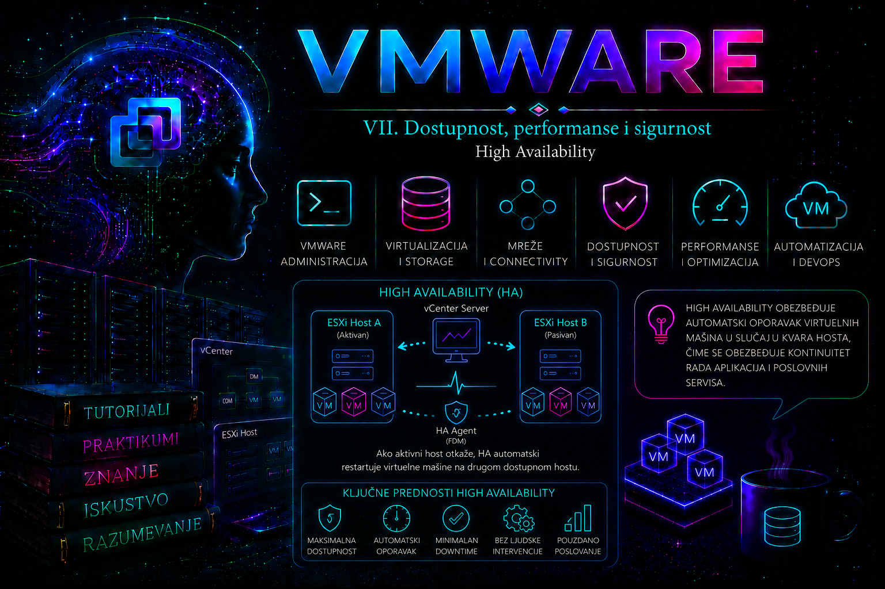

VMware

Šta predstavlja vSphere High Availability
vSphere High Availability (HA) predstavlja mehanizam za automatski oporavak virtuelnih mašina nakon otkaza ESXi hosta ili ozbiljnog poremećaja koji onemogućava dalji rad tog hosta. Za razliku od vMotion-a, koji omogućava plansku migraciju bez prekida rada, HA prihvata činjenicu da je do prekida već došlo i fokusira se na što brži povratak servisa.
Administrator mora odmah razumeti jednu veoma važnu razliku:
- vMotion sprečava prekid rada.
- HA reaguje nakon što je prekid već nastao.
- Fault Tolerance pokušava da prekid uopšte ne postoji.
Zbog toga HA nije tehnologija za "zero downtime". Kada host otkaže, virtuelna mašina prestaje sa radom zajedno sa njim. HA pronalazi drugi odgovarajući host i ponovo pokreće VM koristeći njegove fajlove koji se nalaze na zajedničkom storage-u ili vSAN-u.
Za većinu enterprise okruženja upravo HA predstavlja osnovni sloj dostupnosti i gotovo svaki produkcioni klaster koristi ovu funkcionalnost.
Osnovni princip rada
Da bi HA mogao da funkcioniše moraju biti ispunjeni osnovni uslovi:
- više ESXi hostova u istom klasteru;
- zajednički pristup VM datotekama (vSAN, SAN ili NAS, odnosno drugi podržani datastore);
- vCenter Server za formiranje klastera, konfiguraciju, nadzor i izmene HA politike;
- ispravno podešena management mreža između hostova;
- dovoljno slobodnih CPU i RAM resursa za prihvat VM-ova nakon otkaza.
vCenter Server je upravljački preduslov, ali nije u aktivnoj putanji svake HA odluke. Ako vCenter privremeno postane nedostupan nakon što je klaster pravilno konfigurisan, FDM agenti na ESXi hostovima nastavljaju da nadziru klaster i mogu izvršiti restart zaštićenih VM-ova. Za potpun administratorski pregled, promenu politike, zadatke i centralizovane događaje vCenter ipak mora biti oporavljen. Slično tome, HA ne zahteva jedan određeni storage proizvod, ali ciljnom hostu moraju biti dostupne VM konfiguracija i diskovi; VM čije se datoteke nalaze samo na lokalnom datastore-u neuspelog hosta ne može se restartovati na drugom hostu.
Kada administrator uključi HA na klasteru, vCenter obezbeđuje i konfiguriše FDM (Fault Domain Manager) HA agente na hostovima. Svaki host postaje član HA klastera i učestvuje u distribuiranom nadzoru. Način pakovanja i isporuke FDM komponente zavisi od generacije proizvoda i modela životnog ciklusa, pa se stanje ne zaključuje samo po prisustvu određenog VIB-a: merodavni su HA status hosta, uspešan zadatak konfiguracije i fdm.log. U mešovitim ili upravo nadograđenim klasterima treba proveriti interoperabilnost i završiti podržani upgrade redosled pre izvođenja failover testa.
Glavne komponente HA sistema
| Komponenta | Uloga |
|---|---|
| vCenter Server | Konfiguriše HA i distribuira podešavanja. |
| FDM Agent | Radi na svakom ESXi hostu i učestvuje u nadzoru i restartovanju VM-ova. |
| Primary host | Koordinira HA aktivnosti u klasteru. |
| Secondary hostovi | Šalju heartbeat poruke i izvršavaju zahteve leader hosta. |
| Datastore Heartbeat | Pomaže razlikovanju mrežne izolacije od stvarnog pada hosta. |
Administrator ne određuje ručno primary host. FDM automatski bira primary u procesu izbora, a nakon njegovog otkaza preostali hostovi biraju novog. U starijoj dokumentaciji i logovima mogu se sresti termini master i slave; aktuelni termini su primary i secondary. Ovo nije isto što i istorijska AAM arhitektura iz veoma starih izdanja.
Kako izgleda tok rada prilikom otkaza hosta
- Host redovno šalje heartbeat drugim hostovima.
- Leader primećuje da heartbeat više ne stiže.
- Pokreće se postupak utvrđivanja da li je host:
- zaista pao,
- izolovan od mreže,
- ili postoji network partition.
- Proveravaju se datastore heartbeat informacije.
- Ako se potvrdi da host više nije operativan, određuje se novi host za restart VM-ova.
- VM registracija se prebacuje na novi host.
- Virtuelne mašine se redom uključuju prema restart prioritetima.
- Nakon uspešnog podizanja operativni sistem nastavlja boot proces.
Administrator treba da razume da HA nikada ne "nastavlja" izvršavanje VM-a. VM se pokreće iz početka kao nakon fizičkog nestanka struje.
Kako HA razlikuje različite vrste problema
Najveći izazov nije restart VM-a već pravilna procena da li host zaista više ne postoji.
Postoje tri najčešće situacije.
1. Potpuni pad hosta
Host više ne odgovara.
Primer:
- nestanak napajanja
- PSOD
- potpuni hardverski kvar
HA pokreće restart VM-ova.
2. Network Isolation
Host radi, ali je izgubio management mrežu.
Virtuelne mašine možda i dalje normalno izvršavaju aplikacije.
Ovde HA mora veoma pažljivo odlučiti da li treba restartovati VM-ove ili ne, kako ne bi došlo do "split brain" situacije.
3. Network Partition
Deo hostova vidi jedne hostove, ali ne vidi druge.
Klaster može biti podeljen na više grupa.
Datastore heartbeat tada postaje veoma važan dodatni mehanizam za donošenje ispravne odluke.
Heartbeat mehanizmi
HA koristi dva nezavisna sistema nadzora.
Management Network Heartbeat
Predstavlja osnovni način komunikacije između hostova.
Ako heartbeat nestane, još uvek nije dokazano da je host mrtav.
Datastore Heartbeat
Host periodično zapisuje informacije na zajednički datastore.
Ako management mreža prestane da radi, ali datastore heartbeat i dalje postoji, HA zaključuje da host verovatno još radi i odlaže restart VM-ova dok ne utvrdi stvarno stanje. Time se značajno smanjuje mogućnost dvostrukog pokretanja iste virtuelne mašine.
Host Isolation Response
Kada host izgubi management mrežu, moguće je definisati njegovo ponašanje.
| Opcija | Opis |
|---|---|
| Leave Powered On | VM ostaje da radi. |
| Power Off | Host gasi VM kako bi drugi host mogao bezbedno da ga pokrene. |
| Shutdown | Ako VMware Tools radi, VM se prvo uredno gasi. |
Izbor zavisi od projektovanog ponašanja infrastrukture i vrste aplikacija. U okruženjima sa stabilnom mrežom često se koristi "Leave Powered On", dok se u pojedinim SAN ili vSAN okruženjima bira drugačija politika kako bi se izbegle duple instance.
Admission Control
Jedna od najvažnijih HA funkcija jeste Admission Control.
Njegov zadatak nije restart VM-ova.
Njegov zadatak je da unapred spreči administratora da preoptereti klaster do mere u kojoj nakon otkaza hosta više neće postojati dovoljno resursa za oporavak.
Na primer:
- četiri hosta;
- planiran gubitak jednog hosta;
- Admission Control rezerviše deo CPU i RAM kapaciteta.
Ako administrator pokuša da uključi novu VM koja bi ugrozila garantovani failover kapacitet, HA će odbiti zahtev. U savremenim verzijama preporučeni pristup je politika zasnovana na procentu rezervisanih resursa klastera, dok stariji modeli sa slotovima postoje prvenstveno zbog kompatibilnosti sa ranijim implementacijama. Admission Control koristi rezervacije CPU i memorije VM-ova (ili podrazumevane minimalne vrednosti kada rezervacije nisu definisane), a ne njihovu ukupno dodeljenu konfiguraciju.
Restart Priority
Nakon velikog incidenta nije dovoljno da se VM-ovi pokrenu proizvoljnim redosledom.
Administrator može definisati prioritete.
- Highest
- High
- Medium
- Low
Tipičan enterprise redosled izgleda ovako:
- Active Directory
- DNS
- NTP
- Database serveri
- Application serveri
- Web serveri
- Pomoćni servisi
Na taj način aplikacioni server neće pokušavati da se podigne pre baze podataka od koje zavisi.
VM Monitoring
HA može nadgledati ne samo host već i samu virtuelnu mašinu.
Ako VMware Tools prestane da šalje heartbeat, HA može automatski restartovati VM.
Važno je razumeti ograničenje.
VM Monitoring ne proverava da li aplikacija radi.
On proverava:
- status VMware Tools;
- heartbeat iz operativnog sistema;
- zaglavljivanje operativnog sistema.
Ako IIS ili Oracle servis prestane da radi, ali operativni sistem normalno funkcioniše, VM Monitoring neće reagovati.
Application Monitoring
Napredniji nivo predstavlja Application Monitoring.
VMware Tools može prosleđivati informacije o aplikacijama koje podržavaju ovu funkcionalnost.
U praksi se danas za nadzor aplikacija mnogo češće koriste namenski sistemi kao što su Aria Operations, Prometheus, Zabbix, SCOM ili drugi enterprise alati, dok HA ostaje fokusiran na dostupnost infrastrukture.
Odnos HA sa drugim VMware funkcijama
| Tehnologija | Odnos prema HA |
|---|---|
| vMotion | Planirana migracija bez prekida rada. |
| DRS | Nakon HA restarta može ponovo izbalansirati VM raspored. |
| Storage vMotion | Nije zamena za HA. |
| Fault Tolerance | Kod FT VM-ova primarna zaštita je FT, dok HA predstavlja dodatni sloj oporavka u određenim scenarijima. |
| vSAN | Obezbeđuje zajednički storage potreban za restart VM-ova. |
Projektovanje HA klastera
Prilikom projektovanja administrator treba da odgovori na nekoliko pitanja pre nego što uključi HA:
- Koliko hostova sme da otkaže?
- Koliki je očekivani RTO?
- Koliko slobodne memorije mora postojati?
- Da li se koristi DRS?
- Da li postoji više management mreža?
- Koliko heartbeat datastore-ova je dostupno?
- Da li postoje VM-ovi koji ne smeju biti restartovani automatski?
Tek nakon odgovora na ova pitanja HA postaje deo dobro projektovane strategije dostupnosti, a ne samo uključena opcija u podešavanjima klastera.
Najčešće ESXi i CLI provere
Na ESXi hostu administrator često prvo proverava status HA agenta.
/etc/init.d/fdm statusKomanda se izvršava na ESXi Shell-u ili preko SSH-a. Ne menja konfiguraciju sistema već prikazuje da li je FDM servis aktivan. Očekivan rezultat je da je servis pokrenut. Ako nije, to može ukazivati na problem sa HA agentom ili konfiguracijom hosta.
esxcli network ip interface listIzvršava se na ESXi hostu i prikazuje stanje VMkernel mrežnih interfejsa. Koristi se za proveru management mreže preko koje HA razmenjuje heartbeat poruke. Komanda ne menja stanje sistema.
esxcli storage filesystem listPrikazuje montirane datastore-ove i omogućava proveru da li su heartbeat datastore-i dostupni. Ako zajednički datastore nije vidljiv, HA može imati poteškoće pri razlikovanju izolacije od stvarnog otkaza hosta.
vim-cmd vmsvc/getallvmsPrikazuje registrovane virtuelne mašine na konkretnom ESXi hostu. Korisna je tokom analize da li je VM registrovan pre ili posle HA restarta. Ne vrši nikakve izmene.
Get-Cluster "Production" | Get-VMHostPowerCLI komanda izvršava se sa administratorske radne stanice povezane na vCenter Server. Koristi se za proveru članova HA klastera i predstavlja bezbednu read-only operaciju.
Drugi deo – Praktikum, prvi deo
Ovaj praktikum pretvara osnovno poznavanje vSphere HA u operativno administratorsko znanje. Vežbe su organizovane tako da administrator najpre dokumentuje početno stanje, zatim pravilno uključi i proveri HA, definiše kapacitet za failover, postavi redosled oporavka servisa i izvrši kontrolisanu planiranu operaciju nad hostom.
Prvi deo praktikuma ne izaziva nekontrolisani pad hosta. Simulacija stvarnog otkaza, mrežne izolacije, nedostatka resursa, problema sa heartbeat datastore-ovima, VM Monitoring-a i detaljna analiza HA failover logova obrađuju se u drugom delu praktikuma.
Aktuelni vSphere HA koristi mrežne i datastore heartbeat mehanizme da bi razlikovao pad hosta od mrežne particije ili izolacije. Admission Control rezerviše kapacitet potreban za oporavak VM-ova, dok FDM logovi omogućavaju detaljnu analizu izbora HA uloga, stanja hostova i restartovanja virtuelnih mašina.
Laboratorijska topologija
| Komponenta | Primer | Namena |
|---|---|---|
| vCenter Server | vcsa01.lab.local | Centralno upravljanje klasterom i HA konfiguracijom |
| Datacenter | DC-LAB | Inventarski kontejner |
| Klaster | CL-PROD-LAB | HA i DRS klaster |
| ESXi host 1 | esx01.lab.local | Član klastera |
| ESXi host 2 | esx02.lab.local | Član klastera |
| ESXi host 3 | esx03.lab.local | Član klastera i dodatni failover kapacitet |
| Zajednički datastore | DS-SHARED-01 | Smeštaj VM konfiguracije i virtuelnih diskova |
| Drugi zajednički datastore | DS-SHARED-02 | Dodatni datastore i heartbeat kandidat |
| Management mreža | VLAN 10, 10.100.10.0/24 | vCenter, host management i HA komunikacija |
| Test virtuelne mašine | vm-ad01, vm-db01, vm-app01, vm-web01 | Provera prioriteta i zavisnosti pri oporavku |
| Administratorska stanica | admin01.lab.local | PowerCLI, SSH i pristup vSphere Client-u |
Za ozbiljniju laboratoriju preporučuju se najmanje tri ESXi hosta. Dva hosta su dovoljna za demonstraciju osnovnog HA restarta, ali slabije predstavljaju produkcioni dizajn jer održavanje jednog hosta ostavlja klaster bez dodatne tolerancije na kvar.
Opšti preduslovi
- Svi hostovi moraju biti povezani sa istim vCenter Serverom i dodati u isti klaster.
- Hostovi moraju imati ispravnu management mrežnu povezanost, DNS rezoluciju i vremensku sinhronizaciju.
- Virtuelne mašine korišćene za testiranje treba da budu smeštene na storage-u dostupnom svim potencijalnim odredišnim hostovima.
- Port grupe na kojima rade test VM-ovi moraju postojati i biti pravilno konfigurisane na svim hostovima.
- Na klasteru mora postojati dovoljno slobodnog CPU i memorijskog kapaciteta za restart test VM-ova.
- Administratorski nalog mora imati odgovarajuće privilegije za konfiguraciju klastera i pregled hostova, VM-ova, događaja i alarma.
- PowerCLI stanica treba da koristi aktuelni podržani VMware PowerCLI modul.
- SSH pristup hostovima uključuje se samo kada je potreban i nakon vežbe se ponovo isključuje.
Važna verzijska i licencna napomena
Tačan raspored opcija u vSphere Client-u može se razlikovati između vSphere 7, vSphere 8 i vSphere 9 okruženja. U novijem klijentu HA podešavanja se uglavnom nalaze na nivou klastera, u sekciji Configure > vSphere Availability, dok se u pojedinim verzijama koristi naziv vSphere HA. Dostupnost funkcija, pravo korišćenja i način licenciranja zavise od konkretne Broadcom pretplate, entitlement-a i izdanja proizvoda. Pre produkcione implementacije treba proveriti ugovorno pravo korišćenja za tačnu verziju i paket, a ne oslanjati se na istorijske tabele VMware licenci.
Vežba 1 – Snimanje početnog stanja i provera preduslova za HA
Cilj vežbe
Cilj je da administrator pre promene konfiguracije dokaže da klaster zaista ispunjava mrežne, storage, resursne i inventarske preduslove za HA. U produkciji se HA ne uključuje metodom pokušaja i greške. Najpre se dokumentuje postojeće stanje i identifikuju zavisnosti koje bi mogle sprečiti restart virtuelnih mašina.
Početno stanje
- Klaster postoji, ali HA još nije uključen ili njegovo stanje nije potvrđeno.
- Sva tri hosta su povezana sa vCenter Serverom.
- Test VM-ovi mogu biti raspoređeni na različitim hostovima.
- Najmanje jedan zajednički datastore vidljiv je sa svih hostova.
Upozorenje o riziku
Ova vežba je read-only i ne treba da menja stanje klastera. Nemoj tokom inventarisanja popravljati više problema odjednom. Svako odstupanje prvo zabeleži, odredi njegov uticaj, a zatim uvedi korekciju kao kontrolisanu promenu.
Korak 1 – Provera stanja hostova u vSphere Client-u
- Prijavi se u vSphere Client.
- Otvori Hosts and Clusters.
- Izaberi DC-LAB > CL-PROD-LAB.
- Otvori karticu Hosts.
- Proveri da li su svi hostovi u stanju Connected.
- Proveri da nijedan host nije u stanju Not Responding, Disconnected ili neočekivano u maintenance režimu.
- Za svaki host proveri Summary, aktivne alarme i stanje fizičkog hardvera.
Očekivani rezultat
Svi hostovi su povezani, bez kritičnih alarma koji utiču na management mrežu, storage, memoriju, CPU ili vCenter komunikaciju.
Korak 2 – Provera hostova pomoću PowerCLI-ja
Na administratorskoj stanici pokreni PowerShell ili PowerShell Core i poveži se sa vCenter Serverom:
Connect-VIServer -Server vcsa01.lab.localKomanda uspostavlja PowerCLI sesiju prema vCenter Serveru. Menja samo stanje lokalne PowerCLI sesije i ne menja konfiguraciju vSphere okruženja. Produkcioni rizik je nizak, ali administratorske akreditive ne treba unositi u nezaštićene skripte niti čuvati kao običan tekst.
Prikaži osnovno stanje hostova:
Get-Cluster -Name "CL-PROD-LAB" |
Get-VMHost |
Select-Object Name,
ConnectionState,
PowerState,
NumCpu,
MemoryTotalGB,
MemoryUsageGB,
Version,
BuildOva read-only komanda prikazuje hostove koji pripadaju klasteru, njihovo stanje, resurse i verzije. Očekuje se da su svi hostovi u stanju Connected i PoweredOn.
Proveri da li je neki host u maintenance režimu:
Get-Cluster -Name "CL-PROD-LAB" |
Get-VMHost |
Select-Object Name, ConnectionState,
@{Name="MaintenanceMode";Expression={$_.ExtensionData.Runtime.InMaintenanceMode}}Rezultat False znači da host nije u maintenance režimu. Tokom planiranog održavanja rezultat može legitimno biti True, ali takav host ne treba računati kao dostupan HA kapacitet.
Korak 3 – Provera management VMkernel interfejsa
U vSphere Client-u za svaki host otvori:
Host > Configure > Networking > VMkernel adapters
Proveri:
- koji VMkernel adapter ima uključenu uslugu Management;
- IP adresu i subnet masku;
- port grupu i VLAN;
- uplink redundansu;
- MTU vrednost;
- da li je adapter aktivan.
Na ESXi Shell-u ili preko SSH-a izvrši:
esxcli network ip interface listKomanda je read-only. Prikazuje VMkernel interfejse, njihovo administrativno i operativno stanje, MTU i povezanu port grupu. Za management VMkernel očekuju se Enabled: true i Portset koji odgovara standardnom ili distribuiranom switch-u.
Zatim proveri IP konfiguraciju:
esxcli network ip interface ipv4 getAdministrator proverava da li svaki management VMkernel ima očekivanu adresu, masku i gateway konfiguraciju. Komanda ne menja stanje sistema.
Proveri VMkernel servise:
esxcli network ip interface tag get -i vmk0Parametar -i vmk0 određuje interfejs koji se proverava. Očekivani rezultat za management VMkernel sadrži oznaku Management. Ako se management servis nalazi na drugom interfejsu, zameni vmk0 odgovarajućim nazivom.
Korak 4 – Provera management mrežne dostupnosti
Sa svakog hosta proveri komunikaciju prema management adresama ostalih hostova:
vmkping -I vmk0 10.100.10.12
vmkping -I vmk0 10.100.10.13Komanda se izvršava na ESXi hostu i šalje ICMP zahtev preko izabranog VMkernel interfejsa. Ne menja stanje sistema. Očekuju se odgovori bez gubitka paketa.
Ako management mreža koristi jumbo frame veličinu, test mora koristiti odgovarajuću veličinu paketa i zabranu fragmentacije:
vmkping -I vmk0 -d -s 8972 10.100.10.12Ovaj test ima smisla samo ako je čitava putanja projektovana za MTU 9000. Neuspeh ne treba automatski tumačiti kao HA kvar ako management mreža koristi MTU 1500. Veličina testa mora odgovarati stvarnoj mrežnoj konfiguraciji.
Korak 5 – Provera DNS-a i vremena
Proveri hostname hosta:
esxcli system hostname getProveri DNS konfiguraciju:
esxcli network ip dns server list
esxcli network ip dns search listProveri da li se ostali hostovi i vCenter pravilno razrešavaju:
nslookup esx02.lab.local
nslookup vcsa01.lab.localProveri vreme i NTP stanje:
esxcli system time get
/etc/init.d/ntpd status
ntpq -pKomande su read-only. Neusklađeno vreme može otežati tumačenje događaja i logova, izazvati probleme sa sertifikatima i otežati korelaciju HA incidenta između vCenter-a i više hostova.
Korak 6 – Provera zajedničkog storage-a
U vSphere Client-u izaberi klaster, zatim otvori:
Monitor > Datastores
Proveri da li svaki zajednički datastore ima očekivanu konektivnost. Zatim izaberi datastore i proveri karticu Hosts. Svi hostovi koji mogu prihvatiti HA restart moraju imati pristup VM datotekama.
Na svakom ESXi hostu izvrši:
esxcli storage filesystem listKomanda prikazuje montirane filesystem-e, datastore nazive, UUID vrednosti, tip i kapacitet. Očekuje se da se zajednički VMFS, NFS ili vSAN datastore pojavljuje na svim hostovima.
Za VMFS datastore proveri uređaje i putanje:
esxcli storage core device list
esxcli storage core path listKomande ne menjaju stanje. Administrator traži neočekivane dead, off ili nedostupne putanje, ali tumačenje zavisi od storage dizajna i multipathing politike.
Za NFS datastore koristi:
esxcli storage nfs list
esxcli storage nfs41 listPrva komanda prikazuje NFS 3 datastore-ove, a druga NFS 4.1 datastore-ove. Očekuju se ispravni mount point, udaljeni server i status dostupnosti.
Korak 7 – Provera mrežne dostupnosti VM port grupa
HA može uspešno pokrenuti VM na drugom hostu, ali aplikacija neće biti dostupna ako odredišni host nema odgovarajuću port grupu, VLAN ili uplink.
Za standardne switch-eve na svakom hostu proveri:
esxcli network vswitch standard list
esxcli network vswitch standard portgroup listZa distribuirani switch većina inventarskih provera praktičnije se obavlja kroz vCenter i PowerCLI. Prikaži mreže test VM-ova:
Get-Cluster -Name "CL-PROD-LAB" |
Get-VM |
Get-NetworkAdapter |
Select-Object Parent, Name, NetworkName, ConnectionStateOčekuje se da su adapteri povezani sa validnim port grupama i da te port grupe imaju konzistentnu dostupnost na svim hostovima.
Korak 8 – Provera položaja VM konfiguracionih fajlova
Get-Cluster -Name "CL-PROD-LAB" |
Get-VM |
Select-Object Name, PowerState,
@{Name="Host";Expression={$_.VMHost.Name}},
@{Name="Datastore";Expression={($_ | Get-Datastore | Select-Object -ExpandProperty Name) -join ", "}}Komanda ne menja stanje. Administrator treba da identifikuje VM-ove čiji su fajlovi na lokalnom datastore-u jednog hosta. Takav VM se u klasičnom shared-storage HA scenariju ne može jednostavno restartovati na drugom hostu jer drugi host nema pristup njegovim fajlovima.
Korak 9 – Provera resursnog kapaciteta
Get-Cluster -Name "CL-PROD-LAB" |
Get-VMHost |
Select-Object Name,
@{Name="CPU_Total_GHz";Expression={[math]::Round($_.CpuTotalMhz / 1000, 2)}},
@{Name="CPU_Used_GHz";Expression={[math]::Round($_.CpuUsageMhz / 1000, 2)}},
@{Name="Memory_Total_GB";Expression={[math]::Round($_.MemoryTotalGB, 2)}},
@{Name="Memory_Used_GB";Expression={[math]::Round($_.MemoryUsageGB, 2)}},
@{Name="Memory_Free_GB";Expression={[math]::Round($_.MemoryTotalGB - $_.MemoryUsageGB, 2)}}Ovaj pregled nije zamena za Admission Control izračunavanje. On daje operativnu sliku trenutnog opterećenja. HA odluke se ne smeju zasnivati samo na prosečnoj upotrebi, jer se nakon otkaza čitavo opterećenje jednog hosta premešta na preostale hostove.
Provera uspeha vežbe
Vežba je uspešna kada postoji dokumentovana tabela sa najmanje sledećim stavkama:
| Provera | Očekivano stanje | Rezultat |
|---|---|---|
| Hostovi | Svi Connected i PoweredOn | Upisati nalaz |
| Management mreža | Međusobna VMkernel dostupnost | Upisati nalaz |
| DNS i NTP | Ispravna rezolucija i usklađeno vreme | Upisati nalaz |
| Zajednički datastore | Vidljiv sa svih hostova | Upisati nalaz |
| VM mreže | Port grupe dostupne na svim hostovima | Upisati nalaz |
| Kapacitet | Dovoljan za planirani broj otkaza | Upisati nalaz |
Troubleshooting grane
- Ako je host Disconnected, prvo rešavaj vCenter komunikaciju, management mrežu, DNS i agente. Ne uključuj HA preko već neispravnog klastera.
- Ako datastore nije vidljiv sa jednog hosta, proveri storage mrežu, zoning, LUN masking, NFS dozvole, VMkernel binding i multipathing pre HA konfiguracije.
- Ako port grupa ne postoji na svim hostovima, standardizuj mrežnu konfiguraciju pre testiranja failover-a.
- Ako nema dovoljno resursa, smanji opterećenje, dodaj kapacitet ili promeni realno očekivanje tolerancije na kvar. Isključivanje Admission Control-a ne stvara resurse.
- Ako hostovi koriste različite verzije ili build-ove, proveri interoperabilnost i stanje životnog ciklusa klastera pre testiranja.
Vraćanje u početno stanje
Nisu izvršene konfiguracione promene. Ako je SSH uključen samo radi provere, isključi ga kroz:
Host > Configure > System > Services > SSH > Stop
Vežba 2 – Uključivanje vSphere HA i validacija FDM agenata
Cilj vežbe
Cilj je uključivanje HA na postojećem klasteru, praćenje procesa konfiguracije hostova i potvrda da je svaki host uspešno ušao u operativno HA stanje.
Preduslovi
- Vežba 1 završena bez nerešenih kritičnih odstupanja.
- Svi hostovi su povezani i van maintenance režima.
- vCenter ima stabilnu komunikaciju sa svim hostovima.
- Administratorski nalog ima pravo izmene klastera.
Upozorenje o riziku
Uključivanje HA menja konfiguraciju klastera i pokreće konfiguraciju HA komponenti na svim hostovima. Operacija je normalno bez prekida rada VM-ova, ali je ne treba započinjati tokom aktivnog incidenta, vCenter nadogradnje, prekida management mreže ili storage problema.
Korak 1 – Snimanje postojeće konfiguracije klastera
$cluster = Get-Cluster -Name "CL-PROD-LAB"
$cluster |
Select-Object Name,
HAEnabled,
HAAdmissionControlEnabled,
HAFailoverLevel,
HARestartPriority,
HAIsolationResponse,
DrsEnabled,
DrsAutomationLevel |
Format-ListKomanda je read-only i predstavlja osnovni pre-change zapis. Rezultat sačuvaj u change dokumentaciju.
Konfiguraciju možeš izvesti u tekstualni fajl:
$cluster |
Select-Object Name,
HAEnabled,
HAAdmissionControlEnabled,
HAFailoverLevel,
HARestartPriority,
HAIsolationResponse,
DrsEnabled,
DrsAutomationLevel |
Out-File -FilePath ".\CL-PROD-LAB-before-HA.txt"Korak 2 – Uključivanje HA kroz vSphere Client
- Otvori Hosts and Clusters.
- Izaberi CL-PROD-LAB.
- Otvori Configure.
- U sekciji Services ili vSphere Availability otvori HA podešavanja.
- Klikni Edit.
- Uključi vSphere HA.
- Ostavi Host Monitoring uključen.
- Za sada ostavi podrazumevanu Failure Response konfiguraciju, osim ako laboratorijski plan zahteva drugačije.
- Uključi Admission Control, ali njegovu konkretnu politiku podesi u sledećoj vežbi.
- Sačuvaj promene.
vCenter nakon potvrde pokreće zadatke konfiguracije HA na hostovima. Tokom ovog procesa mogu se privremeno pojaviti stanja kao što su Initializing, Configuring ili upozorenja dok se klaster ne stabilizuje.
Korak 3 – Uključivanje HA pomoću PowerCLI-ja
Alternativni postupak je:
Get-Cluster -Name "CL-PROD-LAB" |
Set-Cluster -HAEnabled $true -Confirm:$falseSet-Cluster menja stanje klastera. Parametar -HAEnabled $true uključuje HA, a -Confirm:$false uklanja interaktivnu potvrdu. U produkcionoj skripti ovaj poslednji parametar koristi se samo kada postoje pre-change validacija, logging i kontrola grešaka. Zvanična PowerCLI referenca potvrđuje da Set-Cluster menja HA konfiguraciju klastera i da određene HA opcije mogu automatski uključiti HA.
Bezbedniji administrativni obrazac je:
$cluster = Get-Cluster -Name "CL-PROD-LAB"
if (-not $cluster.HAEnabled) {
$cluster | Set-Cluster -HAEnabled $true -Confirm:$true
}
else {
Write-Host "vSphere HA je već uključen na klasteru."
}Skripta prvo proverava trenutno stanje i izbegava nepotrebnu promenu.
Korak 4 – Praćenje zadataka i događaja
U vSphere Client-u otvori:
CL-PROD-LAB > Monitor > Tasks and Events
Traži zadatke i događaje povezane sa:
- reconfiguring cluster;
- configuring vSphere HA;
- installing ili configuring HA agent;
- host joining HA cluster;
- HA agent state changes;
- heartbeat datastore selection.
PowerCLI pregled poslednjih događaja:
Get-VIEvent -Entity (Get-Cluster -Name "CL-PROD-LAB") -MaxSamples 200 |
Where-Object {
$_.FullFormattedMessage -match "HA|High Availability|FDM"
} |
Select-Object CreatedTime, UserName, FullFormattedMessage |
Sort-Object CreatedTimeKomanda je read-only. Tekst događaja zavisi od verzije i lokalizacije vCenter-a, pa filter ne mora pronaći svaku HA poruku. Za preciznu forenziku koristi se tip događaja i vCenter logovi, a ne samo pretraga teksta.
Korak 5 – Provera HA stanja klastera
Get-Cluster -Name "CL-PROD-LAB" |
Select-Object Name,
HAEnabled,
HAAdmissionControlEnabled,
HAFailoverLevel,
HARestartPriority,
HAIsolationResponse |
Format-ListOčekuje se HAEnabled : True. Ostale vrednosti zavise od verzije i izabrane politike.
Za detaljniji pogled na vSphere API konfiguraciju:
$cluster = Get-Cluster -Name "CL-PROD-LAB"
$cluster.ExtensionData.Configuration.DasConfig |
Format-List *DasConfig sadrži HA konfiguraciju koju PowerCLI objekat ne prikazuje uvek kroz jednostavne osobine. Komanda je read-only. Administrator treba da bude oprezan pri korišćenju ExtensionData za izmene jer pogrešno sastavljen API spec može promeniti više opcija nego što je planirano.
Korak 6 – Provera FDM servisa na hostovima
Na svakom ESXi hostu izvrši:
/etc/init.d/fdm statusKomanda proverava status Fault Domain Manager servisa. Očekuje se da je FDM pokrenut. Komanda ne menja stanje sistema.
U zavisnosti od verzije i načina prikaza logova, HA log se najčešće pregleda kroz simboličku putanju /var/log/fdm.log, koja može upućivati na aktivni runtime log u /var/run/log. Broadcom dokumentacija i KB članci koriste FDM log kao glavni izvor za analizu HA aktivnosti.
tail -n 100 /var/log/fdm.logKomanda prikazuje poslednjih sto redova bez izmene loga. Traži poruke o:
- inicijalizaciji FDM-a;
- ulasku hosta u HA klaster;
- primary ili secondary ulozi;
- SSL komunikaciji;
- management adresama;
- heartbeat datastore-ovima;
- zaštićenim VM-ovima.
Praktičan filter:
grep -Ei "primary|secondary|master|slave|heartbeat|state|error|warning" /var/log/fdm.log |
tail -n 100U novijoj dokumentaciji preferiraju se termini primary i secondary, ali stariji logovi, KB članci i pojedine verzije još mogu sadržati istorijske termine master i slave. Administrator mora prepoznati oba skupa termina tokom analize mešovitih ili nadograđivanih okruženja.
Korak 7 – Provera HA uloga hostova
Na svakom hostu filtriraj FDM log:
grep -Ei "I am primary|I am secondary|master|slave" /var/log/fdm.log |
tail -n 30U normalnom stabilnom klasteru jedan host ima koordinacionu primary ulogu, dok su ostali secondary članovi. Tačna formulacija poruke zavisi od verzije FDM-a. Ne pokušavaj ručno da nametneš ulogu određenom hostu. Izbor koordinacionog hosta je interni HA proces.
Korak 8 – Provera HA zaštite virtuelnih mašina
U vSphere Client-u izaberi klaster i otvori HA monitoring prikaz. Naziv kartice zavisi od verzije, ali se traže:
- HA host status;
- protected VM status;
- configuration issues;
- admission control stanje;
- heartbeat datastore informacije.
VM koja je uključena i nalazi se na odgovarajućem shared storage-u treba da bude zaštićena. Zaštita znači da je HA evidentira i da ima potrebne informacije za pokušaj restarta; ne znači da je uspešan restart apsolutno garantovan bez dostupnih resursa, storage-a i mreže.
Moguće greške
Greška: HA agent unreachable
- Potvrdi da li je problem na jednom ili više hostova.
- Proveri management mrežu i DNS.
- Proveri FDM servis.
- Pregledaj
/var/log/fdm.log. - Pregledaj
/var/log/hostd.log,/var/log/vpxa.logi/var/log/vmkernel.log. - Proveri sertifikate i vreme.
- Tek nakon potvrde uzroka koristi Reconfigure for vSphere HA.
Greška: FDM agent ne može da se instalira ili konfiguriše
U vSphere 7.x i 8.x okruženjima FDM paket se tipično distribuira hostu kada se HA uključi. Problem može biti povezan sa komunikacijom, image stanjem, prostorom, VIB instalacijom, sertifikatom ili nekompatibilnom naprednom opcijom. Aktuelni Broadcom KB opisuje slučajeve u kojima vmware-fdm ne može pravilno da se instalira ili agent ostaje nedostupan.
Proveri instalirane pakete:
esxcli software vib list | grep -i fdmKomanda je read-only. Nemoj ručno uklanjati ili instalirati FDM VIB bez tačnog postupka za konkretnu verziju i bez podrške proizvođača. Standardna korektivna akcija je rešavanje osnovnog uzroka i zatim kontrolisana HA rekonfiguracija.
Bezbedna rekonfiguracija jednog hosta
U vSphere Client-u:
- Izaberi pogođeni host.
- Desni klik.
- Izaberi Reconfigure for vSphere HA.
- Prati zadatak i događaje.
- Potvrdi da je FDM ponovo operativan.
Ne koristi istovremeno rekonfiguraciju svih hostova ako problem nije jasno određen. Time se može ukloniti zdrava HA zaštita tokom incidenta i otežati analiza prvobitnog uzroka.
Provera uspeha vežbe
- HA je uključen na klasteru.
- Host Monitoring je uključen.
- Svi hostovi imaju operativan FDM servis.
- Klaster nema aktivne HA configuration issue poruke.
- Jedan host ima primary, a ostali secondary HA uloge.
- Test VM-ovi su prikazani kao zaštićeni.
Vraćanje u početno stanje
Ako laboratorijski plan zahteva potpuno vraćanje na stanje bez HA:
Get-Cluster -Name "CL-PROD-LAB" |
Set-Cluster -HAEnabled $false -Confirm:$trueOvo je konfiguraciona promena koja uklanja HA zaštitu klastera. U produkciji se ne izvodi bez odobrene promene, procene rizika i alternativnog mehanizma zaštite. Za nastavak ovog praktikuma HA mora ostati uključen.
Vežba 3 – Projektovanje i konfiguracija Admission Control politike
Cilj vežbe
Cilj je da administrator definiše koliko kapaciteta klaster mora ostati dostupno za restart VM-ova nakon otkaza hosta i da razume razliku između rezervisanog failover kapaciteta i trenutne slobodne memorije.
Admission Control ne sprečava fizički kvar i ne stvara dodatne resurse. On ograničava operacije uključivanja VM-ova kada bi takva operacija prekršila definisanu raspoloživost. Broadcom dokumentacija opisuje njegovu svrhu kao obezbeđivanje dovoljnog kapaciteta za oporavak VM-ova nakon otkaza hosta.
Scenario
Klaster ima tri približno jednaka hosta i mora tolerisati potpuni gubitak jednog hosta. U pojednostavljenom homogenom klasteru to odgovara rezervisanju približno 33% CPU i 33% memorijskog kapaciteta. U realnom klasteru sa hostovima različite veličine procenat se ne sme izračunavati samo kao 100 / broj hostova; treba ga zasnovati na kapacitetu najvećeg hosta čiji se gubitak mora tolerisati.
Upozorenje o riziku
Promena Admission Control politike može odmah uticati na mogućnost uključivanja novih ili postojećih VM-ova. Previše stroga politika može blokirati legitimne operacije, dok previše slaba politika može ostaviti klaster bez dovoljnog failover kapaciteta.
Korak 1 – Izračunavanje osnovnog kapaciteta
Prikupi kapacitet svakog hosta:
$hosts = Get-Cluster -Name "CL-PROD-LAB" | Get-VMHost
$hosts |
Select-Object Name,
@{Name="CPU_Total_GHz";Expression={[math]::Round($_.CpuTotalMhz / 1000, 2)}},
@{Name="Memory_Total_GB";Expression={[math]::Round($_.MemoryTotalGB, 2)}} |
Format-Table -AutoSizeIzračunaj ukupan kapacitet:
$totalCpuMhz = ($hosts | Measure-Object -Property CpuTotalMhz -Sum).Sum
$totalMemoryGB = ($hosts | Measure-Object -Property MemoryTotalGB -Sum).Sum
[PSCustomObject]@{
Cluster = "CL-PROD-LAB"
TotalCPU_GHz = [math]::Round($totalCpuMhz / 1000, 2)
TotalMemory_GB = [math]::Round($totalMemoryGB, 2)
NumberOfHosts = $hosts.Count
}Odredi udeo najvećeg hosta:
$largestCpuHost = $hosts |
Sort-Object CpuTotalMhz -Descending |
Select-Object -First 1
$largestMemoryHost = $hosts |
Sort-Object MemoryTotalGB -Descending |
Select-Object -First 1
$cpuFailoverPercent =
[math]::Ceiling(($largestCpuHost.CpuTotalMhz / $totalCpuMhz) * 100)
$memoryFailoverPercent =
[math]::Ceiling(($largestMemoryHost.MemoryTotalGB / $totalMemoryGB) * 100)
[PSCustomObject]@{
CPUFailoverPercent = $cpuFailoverPercent
MemoryFailoverPercent = $memoryFailoverPercent
}Rezultat predstavlja početnu matematičku procenu. U produkciji se dodatno proveravaju:
- CPU i memorijske rezervacije VM-ova;
- overhead virtuelnih mašina;
- neravnomerna veličina hostova;
- resource pool rezervacije;
- VM-host affinity i anti-affinity pravila;
- GPU, vTPM, passthrough i drugi posebni uređaji;
- network i storage dostupnost;
- planirano održavanje uz istovremeni kvar drugog hosta.
Korak 2 – Konfiguracija Admission Control-a u vSphere Client-u
- Izaberi CL-PROD-LAB.
- Otvori Configure > vSphere Availability.
- Klikni Edit.
- Otvori sekciju Admission Control.
- Uključi Admission Control.
- Izaberi odgovarajuću politiku, najčešće procentualnu rezervaciju klasterskih resursa.
- Za homogen laboratorijski klaster od tri hosta postavi približno 33% CPU i 33% memorije ili koristi vrednosti dobijene proračunom najvećeg hosta.
- Pregledaj izračunati failover kapacitet prikazan u klijentu.
- Sačuvaj promenu.
Nazivi politika mogu se razlikovati po verziji. Mogu se pojaviti pristupi kao što su:
- Cluster resource percentage;
- Dedicated failover hosts;
- Slot policy;
- Disabled admission control.
Za većinu modernih opštih klastera procentualna politika je razumljivija i prilagodljivija od istorijskog slot modela. Dedicated failover host može biti opravdan u specifičnim projektima, ali tada rezervisani host normalno ne doprinosi redovnom izvršavanju opterećenja, što smanjuje efikasnost iskorišćenja kapaciteta.
Korak 3 – Provera konfiguracije pomoću PowerCLI-ja
$cluster = Get-Cluster -Name "CL-PROD-LAB"
$cluster |
Select-Object Name,
HAEnabled,
HAAdmissionControlEnabled,
HAFailoverLevel |
Format-List
$cluster.ExtensionData.Configuration.DasConfig |
Format-List *Prva komanda prikazuje opšte HA osobine. Druga daje detaljniji API prikaz politike. Polja se mogu razlikovati između verzija, pa skripte koje parsiraju ove vrednosti treba testirati nakon nadogradnje vCenter-a.
Korak 4 – Provera current failover capacity prikaza
U vSphere Client-u otvori HA status klastera i proveri:
- Current Failover Capacity;
- Configured Failover Capacity;
- CPU failover rezervu;
- Memory failover rezervu;
- eventualne Admission Control poruke;
- da li klaster trenutno zadovoljava politiku.
Administrator ne treba da proverava samo da li je opcija uključena. Mora potvrditi da klaster zaista ispunjava politiku sa trenutnim brojem dostupnih hostova.
Korak 5 – Bezbedna simulacija narušavanja kapaciteta
Nemoj fizički isključivati host. U laboratoriji možeš izabrati jednu ugašenu test VM i privremeno povećavati njenu memorijsku rezervaciju ili pokušati da uključiš dodatne test VM-ove dok Admission Control ne odbije operaciju.
Pre promene zabeleži konfiguraciju test VM-a:
Get-VM -Name "vm-load-test01" |
Get-VMResourceConfiguration |
Format-List *Primer postavljanja laboratorijske memorijske rezervacije:
Get-VM -Name "vm-load-test01" |
Get-VMResourceConfiguration |
Set-VMResourceConfiguration -MemReservationGB 8Ovo menja resursnu konfiguraciju VM-a i može uticati na Admission Control i mogućnost uključivanja VM-a. Izvodi se isključivo na test VM-u. Vrednost mora biti prilagođena veličini laboratorije; ne treba koristiti 8 GB ako lab nema odgovarajući kapacitet.
Pokušaj uključivanja:
Start-VM -VM "vm-load-test01" -Confirm:$trueAko bi uključivanje prekršilo HA failover politiku, vCenter treba da odbije operaciju odgovarajućom Admission Control porukom. Tačna poruka zavisi od verzije i konfiguracije.
Očekivani rezultat
- Klaster prikazuje definisanu failover rezervu.
- Normalne operacije koje ne ugrožavaju rezervu uspevaju.
- Operacija koja bi prekršila politiku može biti blokirana.
- Postojeći VM-ovi ne moraju automatski biti ugašeni samo zato što je politika trenutno narušena.
Važno tumačenje
Admission Control nije load balancer. Klaster može zadovoljiti Admission Control politiku, a ipak biti pod velikim realnim opterećenjem. Obrnuto, klaster može imati dosta trenutno neiskorišćene memorije, ali zbog rezervacija, affinity pravila ili specijalnog hardvera ipak ne biti sposoban da smesti određeni VM.
Troubleshooting grane
Problem: VM ne može da se uključi zbog Admission Control-a
- Potvrdi tekst greške i pogođeni VM.
- Proveri da li je jedan host u maintenance ili disconnected stanju.
- Proveri recentne promene VM rezervacija.
- Proveri resource pool rezervacije.
- Proveri HA failover procenat.
- Proveri affinity i anti-affinity pravila.
- Proveri da li VM zahteva uređaj koji nije dostupan na svim hostovima.
- Ne isključuj Admission Control kao prvu reakciju.
- Oslobodi kapacitet, ispravi rezervaciju ili odobreno promeni politiku.
- Ponovi operaciju i dokumentuj rezultat.
Problem: Current Failover Capacity je nula
Mogući uzroci:
- klaster je preopterećen;
- jedan ili više hostova nisu dostupni;
- rezervacije VM-ova su previsoke;
- politika je stroža od realnog kapaciteta;
- klaster ima premalo hostova;
- postoji neravnoteža CPU i memorijskog kapaciteta;
- HA još nije završio rekonfiguraciju.
Vraćanje laboratorije u početno stanje
Vrati memorijsku rezervaciju test VM-a na prethodnu vrednost. Ako je prethodno bila nula:
Get-VM -Name "vm-load-test01" |
Get-VMResourceConfiguration |
Set-VMResourceConfiguration -MemReservationGB 0Proveri:
Get-VM -Name "vm-load-test01" |
Get-VMResourceConfiguration |
Select-Object VM, MemReservationGBVežba 4 – Definisanje VM restart prioriteta i zavisnosti servisa
Cilj vežbe
Cilj je da se nakon otkaza hosta infrastruktura ne podiže slučajnim poslovnim redosledom. Administrator definiše prioritet oporavka i, gde verzija i konfiguracija to podržavaju, uslove i zavisnosti između grupa VM-ova.
Poslovni scenario
| VM | Uloga | Prioritet | Zavisnost |
|---|---|---|---|
| vm-ad01 | Active Directory i DNS | Highest | Nema infrastrukturnu VM zavisnost |
| vm-db01 | Baza podataka | High | Zavisi od DNS-a i autentikacije |
| vm-app01 | Aplikacioni servis | Medium | Zavisi od baze |
| vm-web01 | Web front-end | Low ili Medium | Zavisi od aplikacionog servisa |
Upozorenje o dizajnu
Restart Priority određuje red prvenstva kojim HA pokušava da pokrene VM-ove, ali sam prioritet ne dokazuje da je aplikacija unutar prethodne VM spremna. Uslov „VM je uključena” nije isto što i „baza prihvata konekcije”. Za aplikacionu spremnost potrebni su odgovarajući dependency uslovi, VMware Tools stanje, application monitoring ili spoljna automatizacija.
Korak 1 – Dokumentovanje postojećih override pravila
U vSphere Client-u izaberi:
CL-PROD-LAB > Configure > VM Overrides
Zabeleži postojeće override unose, naročito:
- VM Restart Priority;
- Host Isolation Response;
- VM Monitoring;
- VM Component Protection;
- dodatna kašnjenja i dependency uslove, ako postoje.
Korak 2 – Postavljanje podrazumevane politike klastera
- Otvori CL-PROD-LAB > Configure > vSphere Availability.
- Klikni Edit.
- Otvori Failures and Responses.
- Za host failure response izaberi restart VM-ova.
- Postavi razuman podrazumevani restart priority, na primer Medium.
- Sačuvaj konfiguraciju.
Podrazumevana politika treba da pokrije većinu VM-ova. Override se koristi samo za VM-ove sa dokazanim posebnim poslovnim zahtevom. Ako svaka VM ima override, konfiguracija postaje teško održiva i sklona zastarevanju.
Korak 3 – Kreiranje VM override-a
- Otvori Configure > VM Overrides.
- Klikni Add.
- Izaberi vm-ad01.
- Uključi override za VM Restart Priority.
- Postavi Highest.
- Sačuvaj pravilo.
- Ponovi postupak za vm-db01 sa prioritetom High.
- Za vm-app01 koristi Medium.
- Za vm-web01 koristi Low ili Medium, prema laboratorijskom planu.
Korak 4 – Kreiranje VM grupa
Ako verzija i konfiguracija klastera omogućavaju VM/Host Groups i pravila zavisnosti, napravi logičke VM grupe:
| Grupa | Članovi |
|---|---|
| GRP-INFRA | vm-ad01 |
| GRP-DATABASE | vm-db01 |
| GRP-APPLICATION | vm-app01 |
| GRP-WEB | vm-web01 |
GUI putanja je tipično:
CL-PROD-LAB > Configure > VM/Host Groups
Zatim, u sekciji za VM/Host pravila, definiši odgovarajuće dependency pravilo kada je dostupno i podržano. Tačna terminologija i mogućnosti zavise od verzije vSphere-a i DRS/HA konfiguracije.
Korak 5 – Definisanje uslova nastavka
U novijim HA konfiguracijama mogu se koristiti uslovi koji određuju kada se prelazi na sledeću prioritetnu grupu, na primer:
- resources allocated;
- VM powered on;
- guest heartbeat detected;
- app heartbeat detected;
- određeno dodatno kašnjenje.
Za laboratoriju sa instaliranim i ispravnim VMware Tools može se koristiti guest heartbeat kao jači signal od samog power-on stanja. Ipak, ni guest heartbeat ne garantuje da je konkretna poslovna aplikacija spremna.
Korak 6 – Provera VMware Tools stanja
Get-VM -Name "vm-ad01","vm-db01","vm-app01","vm-web01" |
Select-Object Name, PowerState,
@{Name="ToolsStatus";Expression={$_.ExtensionData.Guest.ToolsStatus}},
@{Name="ToolsRunningStatus";Expression={$_.ExtensionData.Guest.ToolsRunningStatus}} |
Format-Table -AutoSizeKomanda je read-only. Za guest heartbeat uslove očekuje se da VMware Tools radi. Ako Tools nije instaliran ili nije pokrenut, HA ne može koristiti taj signal na očekivan način.
Korak 7 – Provera poslovne spremnosti
Za svaku servisnu komponentu definiši nezavisan test:
- DNS: uspešna rezolucija kontrolnog imena;
- Active Directory: uspešna autentikacija ili LDAP/Kerberos test;
- baza: uspešna konekcija i jednostavan read-only upit;
- aplikacioni servis: health endpoint ili kontrolni zahtev;
- web: HTTP ili HTTPS odgovor očekivanog statusa.
Primer sa administratorske Linux stanice:
nslookup app.lab.local
curl -k -I https://app.lab.local/healthPrimer sa PowerShell stanice:
Resolve-DnsName app.lab.local
Test-NetConnection app.lab.local -Port 443
Invoke-WebRequest -Uri "https://app.lab.local/health" -UseBasicParsingOvi testovi ne menjaju vSphere konfiguraciju. Mogu, međutim, generisati aplikacione i mrežne log zapise.
Očekivani rezultat
- Infrastrukturne VM imaju viši restart prioritet.
- Baza se ne tretira isto kao pomoćni web server.
- Postoje dokumentovane zavisnosti između servisnih slojeva.
- Za svaki sloj postoji operativan readiness test.
- Override pravila se koriste samo tamo gde su opravdana.
Tipične greške
- Sve VM postavljene su na Highest, čime se prioritet praktično obesmišljava.
- Prioritet je definisan prema nazivu servera, a ne prema poslovnoj zavisnosti.
- Administrator pretpostavlja da power-on znači spremnu aplikaciju.
- Dependency pravilo čeka guest heartbeat, ali VMware Tools ne radi.
- Dodatno kašnjenje je prekratko za bazu ili predugo za kritičan servis.
- Stara VM ostaje u grupi nakon promene aplikacione arhitekture.
Vraćanje laboratorije u početno stanje
Ako treba ukloniti test override:
- Otvori Configure > VM Overrides.
- Izaberi test pravilo.
- Klikni Remove.
- Potvrdi da VM ponovo nasleđuje klastersku politiku.
Vežba 5 – Planirano održavanje hosta bez oslanjanja na HA restart
Cilj vežbe
Cilj je razumevanje razlike između planirane administrativne operacije i neplaniranog HA failover-a. Kod planskog održavanja VM-ovi se premeštaju vMotion-om, a host se uvodi u maintenance režim. HA nije zamena za pravilno pražnjenje hosta.
Scenario
Host esx03.lab.local treba pripremiti za firmware ili ESXi održavanje. Klaster mora ostati HA zaštićen u meri u kojoj preostali kapacitet to omogućava.
Upozorenje o riziku
Pre ulaska hosta u maintenance režim proveri da li preostali hostovi imaju dovoljno resursa. U klasteru sa samo dva hosta, održavanje jednog hosta znači da HA nema drugi host na koji bi restartovao VM u slučaju kvara preostalog hosta.
Korak 1 – Pre-check
$hostToMaintain = Get-VMHost -Name "esx03.lab.local"
$hostToMaintain |
Select-Object Name,
ConnectionState,
PowerState,
CpuUsageMhz,
CpuTotalMhz,
MemoryUsageGB,
MemoryTotalGB |
Format-List
$hostToMaintain |
Get-VM |
Select-Object Name, PowerState |
Format-Table -AutoSizeKomande su read-only. Zabeleži koje VM trenutno rade na hostu.
Proveri klastersko HA stanje:
Get-Cluster -Name "CL-PROD-LAB" |
Select-Object Name,
HAEnabled,
HAAdmissionControlEnabled,
HAFailoverLevel |
Format-ListKorak 2 – Provera migracione kompatibilnosti
U vSphere Client-u pokreni migracioni pre-check za kritične VM-ove. Proveri:
- CPU kompatibilnost i EVC;
- dostupnost port grupa;
- storage dostupnost;
- povezane ISO fajlove i lokalne uređaje;
- passthrough uređaje;
- VM-host pravila;
- dostupnost resursa na odredišnom hostu.
Korak 3 – Ručna migracija, ako DRS nije potpuno automatizovan
GUI putanja:
- Izaberi VM na esx03.
- Desni klik i izaberi Migrate.
- Izaberi Change compute resource only.
- Izaberi odgovarajući host.
- Pregledaj compatibility rezultate.
- Završi migraciju.
PowerCLI primer:
Move-VM -VM "vm-app01" -Destination "esx01.lab.local" -Confirm:$trueMove-VM menja mesto izvršavanja VM-a. Kada su ispunjeni uslovi za vMotion, VM ostaje uključena. Pre izvršavanja proveri kompatibilnost i ne koristi automatsku petlju za sve VM-ove bez obrade grešaka.
Korak 4 – Uvođenje hosta u maintenance režim
U vSphere Client-u:
- Izaberi esx03.lab.local.
- Desni klik.
- Izaberi Maintenance Mode > Enter Maintenance Mode.
- Ako DRS predloži ili pokrene migracije, prati zadatke.
- Sačekaj da host uđe u maintenance režim.
PowerCLI:
Set-VMHost -VMHost "esx03.lab.local" -State Maintenance -Confirm:$trueKomanda menja stanje hosta. Može pokrenuti migracije ili ostati blokirana ako VM-ovi ne mogu da se evakuišu. Nemoj koristiti -Confirm:$false u prvoj laboratorijskoj ili produkcionoj primeni.
Korak 5 – Provera posledica po HA kapacitet
Nakon ulaska hosta u maintenance režim proveri:
- da li Admission Control politika još može biti zadovoljena;
- koliko hostova je ostalo dostupno;
- da li postoje HA configuration issue upozorenja;
- da li su sve VM uspešno migrirane;
- da li su VM i aplikacije i dalje dostupne.
Get-Cluster -Name "CL-PROD-LAB" |
Get-VMHost |
Select-Object Name,
ConnectionState,
@{Name="MaintenanceMode";Expression={$_.ExtensionData.Runtime.InMaintenanceMode}},
MemoryUsageGB,
MemoryTotalGB |
Format-Table -AutoSizeKorak 6 – Izlazak iz maintenance režima
Set-VMHost -VMHost "esx03.lab.local" -State Connected -Confirm:$trueKomanda vraća host iz maintenance režima u operativno stanje. Nakon toga sačekaj da vCenter i HA potvrde da je host ponovo punopravni član klastera.
Proveri FDM:
/etc/init.d/fdm status
tail -n 100 /var/log/fdm.logOčekivani rezultat
- VM-ovi su planski migrirani bez HA restarta.
- Host je bezbedno ušao u maintenance režim.
- Administrator je video uticaj održavanja na failover kapacitet.
- Host se nakon održavanja vratio u operativno HA stanje.
- Nije izazvan nekontrolisani prekid VM-ova.
Ključna administratorska pouka
HA nije alat za redovno pražnjenje hosta. Ako administrator tokom planiranog održavanja jednostavno ugasi host i očekuje da HA restartuje VM-ove, izazvao je nepotreban prekid servisa, nekontrolisan guest OS boot i mogući aplikacioni recovery. Ispravan postupak je vMotion, maintenance režim, održavanje, validacija hosta i povratak u klaster.
Kontrolna tačka nakon prvog dela praktikuma
Pre nastavka na simulacije kvarova administrator treba da potvrdi sledeće:
- preduslovi za HA su dokumentovani i provereni;
- management komunikacija između hostova radi;
- zajednički datastore-i dostupni su svim relevantnim hostovima;
- VM mreže su konzistentne na svim hostovima;
- HA je uključen i FDM je operativan;
- test VM-ovi su HA zaštićeni;
- Admission Control politika odgovara planiranoj toleranciji na kvar;
- restart prioriteti odražavaju poslovne zavisnosti;
- postoje testovi kojima se razlikuju VM power-on i stvarna aplikaciona spremnost;
- planirano održavanje se izvodi migracijom i maintenance režimom, a ne izazivanjem HA restarta.
Tek kada su ove tačke potvrđene, laboratorija je spremna za kontrolisanu simulaciju pada hosta, analizu HA događaja, proveru restart redosleda, host isolation scenarije, pogrešno izabrane heartbeat datastore-ove, VM Monitoring i sistematski oporavak nakon neuspelog failover-a.
Drugi deo – Praktikum, drugi deo
Ovaj deo praktikuma nastavlja rad nakon završene provere preduslova, uključivanja HA, konfiguracije Admission Control politike, definisanja restart prioriteta i izvođenja planskog održavanja hosta. Fokus se sada premešta na kontrolisane simulacije kvarova, razumevanje odluka koje donosi FDM, analizu događaja i logova, bezbedan oporavak i dokumentovanje incidenta.
Svi postupci koji prekidaju management komunikaciju, gase host, zaustavljaju VM ili menjaju storage dostupnost izvode se isključivo u izolovanoj laboratoriji. U produkciji se ne simuliraju nestanak napajanja, PSOD, prekid storage putanja ili mrežna izolacija bez formalno odobrenog testa, potvrđenog poslovnog uticaja, verifikovanog backup-a i unapred pripremljenog plana povratka.
Priprema merenja pre simulacije kvara
Pre svakog testa treba definisati vreme početka, očekivani rezultat i metrike koje će biti prikupljene. Bez toga administrator može videti da se VM ponovo uključila, ali neće znati koliko je trajao oporavak, zbog čega je HA doneo određenu odluku i da li je aplikacija zaista postala dostupna.
Za test VM vm-app01 zabeleži:
- početni ESXi host;
- vreme poslednjeg uspešnog aplikacionog odgovora;
- vreme prestanka dostupnosti;
- vreme HA detekcije kvara;
- vreme početka power-on operacije na drugom hostu;
- vreme kada VMware Tools ponovo počne da radi;
- vreme kada aplikacija ponovo odgovori;
- ukupni infrastrukturni i aplikacioni RTO.
Na PowerCLI stanici pronađi trenutni položaj test VM-a:
$testVM = Get-VM -Name "vm-app01"
$testVM |
Select-Object Name,
PowerState,
VMHost,
@{Name="ToolsStatus";Expression={$_.ExtensionData.Guest.ToolsStatus}},
@{Name="ToolsRunningStatus";Expression={$_.ExtensionData.Guest.ToolsRunningStatus}} |
Format-ListKomanda je read-only. Očekuje se da je VM uključena, da VMware Tools radi i da je poznat host na kojem se VM trenutno izvršava.
Sa Linux kontrolne stanice pokreni kontinuirani mrežni test:
ping vm-app01.lab.localZa preciznije vremensko obeležavanje može se koristiti:
while true; do
date '+%Y-%m-%d %H:%M:%S'
ping -c 1 -W 1 vm-app01.lab.local
sleep 1
done | tee ha-vm-app01-ping.logOva petlja ne menja vSphere stanje. Ona jednom u sekundi proverava mrežnu dostupnost i zapisuje rezultat u lokalni fajl. ICMP odgovor ne dokazuje da aplikacija radi, pa paralelno treba izvršavati aplikacioni health test.
while true; do
printf '%s ' "$(date '+%Y-%m-%d %H:%M:%S')"
curl -k -s -o /dev/null \
-w 'HTTP=%{http_code} TIME=%{time_total}\n' \
https://vm-app01.lab.local/health
sleep 2
done | tee ha-vm-app01-health.logURL treba prilagoditi stvarnoj aplikaciji. Za bazu podataka, DNS, Active Directory ili drugi servis koristi se odgovarajući read-only test, a ne HTTP zahtev.
Na PowerShell stanici sličan test može biti:
while ($true) {
$timestamp = Get-Date -Format "yyyy-MM-dd HH:mm:ss"
try {
$response = Invoke-WebRequest `
-Uri "https://vm-app01.lab.local/health" `
-TimeoutSec 3 `
-UseBasicParsing
"$timestamp HTTP=$($response.StatusCode)"
}
catch {
"$timestamp ERROR=$($_.Exception.Message)"
}
Start-Sleep -Seconds 2
}Vežba 6 – Kontrolisana simulacija potpunog pada ESXi hosta
Cilj vežbe
Cilj je da administrator posmatra kompletan HA failover tok: nestanak host heartbeat-a, proglašenje hosta neispravnim, izbor odredišnog hosta, registraciju i uključivanje VM-a, aktiviranje restart prioriteta i povratak aplikacije.
Laboratorijski scenario
- vm-ad01 radi na esx01;
- vm-db01 i vm-app01 rade na esx02;
- vm-web01 radi na esx03;
- sve VM koriste zajednički datastore;
- Admission Control je konfigurisan za gubitak jednog hosta;
- esx02 je izabran kao host čiji se kvar simulira;
- esx01 i esx03 imaju dovoljno resursa za restart pogođenih VM-ova.
Upozorenje o riziku
Naglo isključivanje hosta predstavlja destruktivan test i izvodi se isključivo u laboratoriji. Ne koristi produkcioni host, produkcione VM-ove, produkcioni storage niti aplikacije sa stvarnim podacima. Pre testa potvrdi da je vCenter Server smešten izvan hosta koji se gasi ili da njegov gubitak neće onemogućiti posmatranje i upravljanje laboratorijom.
Bezbednija alternativa za prvi test jeste uredno zaustavljanje ESXi hosta bez prethodnog ulaska u maintenance režim. To i dalje izaziva prekid VM-ova i HA restart, ali smanjuje rizik od hardverskih ili storage posledica u odnosu na fizičko uklanjanje napajanja.
Korak 1 – Potvrda položaja VM-ova
Get-VMHost -Name "esx02.lab.local" |
Get-VM |
Select-Object Name, PowerState,
@{Name="Datastores";Expression={
($_ | Get-Datastore | Select-Object -ExpandProperty Name) -join ", "
}} |
Format-Table -AutoSizeProveri da na hostu nema vCenter Server Appliance-a, storage kontrolera ili druge komponente potrebne za sprovođenje testa.
Korak 2 – Potvrda HA stanja neposredno pre testa
$cluster = Get-Cluster -Name "CL-PROD-LAB"
$cluster |
Select-Object Name,
HAEnabled,
HAAdmissionControlEnabled,
HAFailoverLevel |
Format-List
$cluster |
Get-VMHost |
Select-Object Name,
ConnectionState,
PowerState,
@{Name="MaintenanceMode";Expression={
$_.ExtensionData.Runtime.InMaintenanceMode
}} |
Format-Table -AutoSizeSvi hostovi treba da budu povezani, uključeni i van maintenance režima.
Korak 3 – Beleženje početnog vremena
$testStart = Get-Date
$testStart | Out-File ".\HA-host-failure-test.txt"
Get-VMHost -Name "esx02.lab.local" |
Get-VM |
Select-Object Name, PowerState, VMHost |
Format-Table -AutoSize |
Out-File ".\HA-host-failure-test.txt" -AppendKorak 4 – Simulacija kvara
U laboratoriji koristi jedan od sledećih pristupa:
- upravljanje napajanjem kroz udaljeni hardverski kontroler, kao što su iLO, iDRAC ili XClarity;
- uredna komanda za gašenje ESXi hosta bez prethodnog maintenance režima;
- gašenje nested ESXi virtuelne mašine ako je laboratorija izgrađena kao nested vSphere okruženje.
Za nested ESXi laboratoriju najbezbednije je isključiti nested ESXi VM iz spoljnog vSphere ili Workstation/Fusion sloja. Nemoj iz unutrašnjeg vCenter-a pokušavati da ugasiš host koji ga istovremeno izvršava.
Na samom test ESXi hostu može se koristiti:
esxcli system shutdown poweroff \
-d 10 \
-r "LAB ONLY - vSphere HA host failure test"Komanda zakazuje gašenje hosta za deset sekundi. Parametar -d određuje odlaganje, a -r razlog. Komanda menja stanje sistema i prekida sve VM-ove koji rade na hostu. Izvodi se isključivo u laboratoriji i tek nakon potvrde da je izabran pravi host.
Pre izvršavanja obavezno proveri identitet hosta:
hostname
esxcli system hostname getKorak 5 – Posmatranje vSphere Client-a
U vSphere Client-u istovremeno prati:
- CL-PROD-LAB > Monitor > Tasks and Events;
- CL-PROD-LAB > Monitor > vSphere HA ili odgovarajući HA status prikaz;
- stanje hosta esx02;
- stanje VM-ova koje su radile na esx02;
- alarme na nivou klastera, hosta i VM-a;
- Admission Control stanje nakon gubitka hosta.
Očekivani redosled je:
- esx02 prestaje da šalje management heartbeat;
- FDM proverava mrežne i datastore heartbeat informacije;
- host prelazi u stanje Not Responding;
- HA proglašava host neuspelim;
- pogođene VM postaju kandidati za failover;
- HA bira kompatibilne hostove sa raspoloživim resursima;
- VM-ovi se uključuju prema restart prioritetu i zavisnostima;
- guest operativni sistemi prolaze kroz normalan boot i aplikacioni recovery;
- monitoring potvrđuje povratak infrastrukturnih i poslovnih servisa.
Datastore heartbeating pomaže HA sistemu da razlikuje host koji je stvarno prestao da radi od hosta koji je samo izgubio management mrežnu komunikaciju. Kada sekundarni host prestane i sa mrežnim i sa datastore heartbeat-om, HA ga može smatrati neuspelim i pokrenuti njegove VM-ove na drugim hostovima.
Korak 6 – Praćenje PowerCLI događaja
$cluster = Get-Cluster -Name "CL-PROD-LAB"
Get-VIEvent -Entity $cluster -Start $testStart |
Where-Object {
$_.FullFormattedMessage -match
"HA|High Availability|failover|restarted|host|not responding"
} |
Select-Object CreatedTime,
ObjectName,
FullFormattedMessage |
Sort-Object CreatedTime |
Format-Table -WrapKomanda je read-only. Tekstualni filter zavisi od jezika i verzije vCenter Servera, pa izostanak rezultata ne znači da nije bilo HA događaja. Događaje treba uporediti sa zadacima, alarmima i FDM logovima.
Prikaži novi položaj VM-ova:
Get-VM -Name "vm-db01","vm-app01" |
Select-Object Name,
PowerState,
VMHost,
@{Name="ToolsRunningStatus";Expression={
$_.ExtensionData.Guest.ToolsRunningStatus
}} |
Format-Table -AutoSizeKorak 7 – Provera restart redosleda
Uporedi vreme power-on događaja za infrastrukturnu, baznu, aplikacionu i web VM:
$vms = Get-VM -Name "vm-ad01","vm-db01","vm-app01","vm-web01"
Get-VIEvent -Entity $vms -Start $testStart |
Where-Object {
$_.FullFormattedMessage -match "powered on|restarted|HA"
} |
Select-Object CreatedTime,
ObjectName,
FullFormattedMessage |
Sort-Object CreatedTime |
Format-Table -WrapOčekuje se da VM sa višim prioritetom imaju prednost, ali realno vreme završetka boot procesa zavisi od operativnog sistema, storage performansi, dostupnih resursa i aplikacionih recovery procedura.
Korak 8 – Provera aplikacionog oporavka
Nemoj zaustaviti test kada VM dobije stanje Powered On. Proveri:
- VMware Tools heartbeat;
- IP dostupnost;
- DNS rezoluciju;
- servisne portove;
- aplikacioni health endpoint;
- integritet baze i aplikacionih redova;
- eventualni guest OS filesystem recovery;
- aplikacione logove.
Primer:
Resolve-DnsName vm-app01.lab.local
Test-NetConnection vm-app01.lab.local -Port 443
Invoke-WebRequest `
-Uri "https://vm-app01.lab.local/health" `
-TimeoutSec 10 `
-UseBasicParsingOčekivani rezultat
- esx02 postaje Not Responding;
- VM-ovi sa zajedničkog datastore-a automatski se pokreću na esx01 ili esx03;
- restart prioriteti utiču na redosled pokušaja oporavka;
- aplikacija ponovo postaje dostupna nakon guest i aplikacionog recovery-ja;
- Admission Control prikazuje smanjenu ili iscrpljenu failover rezervu;
- u događajima i FDM logovima postoji jasan trag HA odluke.
Mogući neuspeh: VM nije restartovana
Proveri sledećim redosledom:
- Da li je VM bila uključena i HA zaštićena pre incidenta?
- Da li se njeni konfiguracioni fajlovi nalaze na storage-u dostupnom preostalim hostovima?
- Da li odredišni hostovi imaju kompatibilan CPU, VM hardware i potrebne uređaje?
- Da li postoji dovoljna memorija?
- Da li DRS ili VM-host pravilo zabranjuje pokretanje na dostupnim hostovima?
- Da li VM koristi lokalni ISO, passthrough uređaj, SR-IOV, vGPU ili drugi poseban resurs?
- Da li je registracija VM-a ostala zaključana na neuspelom hostu?
- Da li je storage u APD ili PDL stanju?
- Koju grešku prikazuje power-on zadatak?
- Šta prikazuju FDM i hostd logovi odredišnog hosta?
Korak 9 – Povratak hosta
Ponovo uključi esx02 i sačekaj da se ESXi potpuno podigne. Nemoj odmah migrirati VM-ove nazad.
Proveri:
Get-VMHost -Name "esx02.lab.local" |
Select-Object Name,
ConnectionState,
PowerState,
Version,
Build |
Format-ListNa hostu proveri:
/etc/init.d/fdm status
esxcli network ip interface list
esxcli storage filesystem list
tail -n 100 /var/log/fdm.logPotvrdi da je host:
- Connected;
- van maintenance režima;
- ponovo član HA klastera;
- povezan sa svim potrebnim datastore-ovima;
- povezan sa svim potrebnim mrežama;
- bez aktivnih hardverskih alarma.
Vraćanje laboratorije u početno stanje
Ako je DRS potpuno automatizovan, može kasnije sam uravnotežiti VM-ove. U suprotnom ih vrati kontrolisanim vMotion migracijama. Nemoj migrirati sve VM-ove istovremeno odmah nakon povratka hosta; najpre potvrdi stabilnost hosta i HA agenta.
Vežba 7 – Host isolation i izbor odgovarajuće isolation response politike
Cilj vežbe
Cilj je razlikovanje potpunog pada hosta od situacije u kojoj ESXi i VM-ovi još rade, ali je host izgubio HA management komunikaciju sa ostatkom klastera.
Važna razlika
Host isolation nije isto što i stanje Disconnected u vCenter inventaru. Host može izgubiti vezu sa vCenter Serverom, a ipak normalno komunicirati sa drugim HA agentima. Obrnuto, može izgubiti HA management mrežnu komunikaciju i proglasiti se izolovanim dok njegovi VM-ovi još rade.
Broadcom opisuje host network isolation kao stanje u kojem host i dalje radi, ali više ne može da kontaktira HA primary host preko management mreže. FDM zatim proverava election saobraćaj i isolation adrese pre nego što proglasi izolaciju.
Upozorenje o riziku
Ovo je rizičan laboratorijski test. Pogrešnim isključivanjem management uplink-a može se izgubiti pristup hostu i otežati vraćanje. Testiraj ga samo ako imaš:
- fizički ili out-of-band pristup hostu;
- pristup DCUI konzoli;
- dokumentovan VLAN i uplink raspored;
- jasno određen interfejs koji se prekida;
- alternativni način ponovnog uključivanja uplink-a;
- potvrdu da se ne prekida istovremeno storage ili VM produkcioni saobraćaj.
U nested laboratoriji izolacija se bezbednije simulira promenom port grupe ili uklanjanjem virtualnog NIC-a management mreže nested ESXi hosta iz spoljnog hipervizora.
Korak 1 – Dokumentovanje isolation response podešavanja
U vSphere Client-u otvori:
CL-PROD-LAB > Configure > vSphere Availability > Edit > Failures and Responses
Zabeleži:
- Host Isolation Response;
- default response;
- VM overrides;
- isolation address napredne opcije, ako postoje;
- da li management mreža ima jedan ili više redundantnih putanja.
Moguće isolation response opcije zavise od verzije, ali uobičajeno uključuju:
| Odgovor | Ponašanje | Glavni rizik |
|---|---|---|
| Leave Powered On | VM ostaje da radi na izolovanom hostu | Aplikacija može biti nedostupna ako je izgubljena i VM mreža; HA je neće automatski restartovati drugde samo zbog izolacije |
| Power Off and Restart | Izolovani host isključuje VM kako bi HA mogao da je pokrene drugde | Naglo gašenje gosta i prekid servisa; zahteva dostupnost shared storage-a i drugih hostova |
| Shut Down and Restart | Pokušava uredno guest gašenje preko VMware Tools, zatim restart drugde | Može kasniti ili preći na tvrđe gašenje ako guest ne reaguje; zavisi od VMware Tools-a |
Aktuelna vSphere dokumentacija omogućava definisanje posebnog odgovora na host isolation kada je HA uključen. Izbor nije univerzalan i mora biti povezan sa mrežnim i storage dizajnom konkretnog klastera.
Korak 2 – Provera isolation adrese
Podrazumevana isolation adresa je tipično gateway management mreže. Ako ta adresa ne odgovara stvarnom redundantnom dizajnu, mogu se definisati dodatne adrese kroz napredne HA opcije.
Primer naziva naprednih opcija:
das.isolationAddress0
das.isolationAddress1
das.usedefaultisolationaddressNemoj dodavati proizvoljne javne IP adrese. Isolation adresa treba da bude stabilna, pouzdano dostupna iz management mreže i nezavisna koliko je praktično moguće od istog failure domain-a koji pokušavamo da detektujemo.
Na ESXi hostu proveri dostupnost gateway-a:
esxcli network ip route ipv4 list
vmkping -I vmk0 10.100.10.1Korak 3 – Izbor test politike
Za prvi izolacioni test koristi Leave Powered On. Time se smanjuje rizik da test izazove nepotrebno guest gašenje. Cilj prve iteracije je dokazivanje detekcije izolacije, ne automatski restart.
Za kasniji test Power Off and Restart koristi isključivo nekritičnu test VM koja nema stvarne podatke.
Korak 4 – Pokretanje praćenja
Na VM-u pokreni:
ping vm-app01.lab.localNa drugom hostu prati FDM log:
tail -f /var/log/fdm.logNa hostu koji će biti izolovan, ako imaš konzolni pristup, prati isti log:
tail -f /var/log/fdm.logKorak 5 – Simulacija management izolacije
Bezbedan pristup u nested laboratoriji:
- Identifikuj virtuelni NIC nested ESXi hosta koji pripada isključivo management mreži.
- Potvrdi da storage i VM mreže koriste druge virtuelne NIC-ove.
- U spoljnom hipervizoru privremeno isključi taj NIC ili promeni njegovu port grupu u izolovanu laboratorijsku mrežu.
- Zabeleži tačno vreme promene.
- Posmatraj FDM događaje i stanje test VM-a.
Na fizičkom ESXi hostu ne preporučuje se nasumično izvođenje:
esxcli network nic down -n vmnicXOva komanda može odseći administratorski pristup i pogoditi više vrsta saobraćaja. Koristi se samo kada je uplink potpuno dokumentovan, postoji out-of-band pristup i potvrđeno je da ne pripada storage-u ili produkcionim VM mrežama.
Očekivani rezultat za Leave Powered On
- host gubi HA komunikaciju sa ostatkom klastera;
- host proverava isolation adresu;
- FDM evidentira network partition ili isolation stanje;
- VM ostaje uključena na izolovanom hostu;
- HA ne pokreće drugu instancu iste VM dok izolovani host zadržava njeno izvršavanje i storage lock;
- vCenter može prikazati host kao Not Responding.
Očekivani rezultat za Power Off and Restart
- izolovani host utvrđuje da je izolovan;
- primenjuje definisanu isolation response politiku;
- test VM se isključuje na izolovanom hostu;
- storage lock se oslobađa;
- HA može pokrenuti VM na hostu u drugoj mrežnoj particiji;
- aplikacija prolazi kroz guest i aplikacioni recovery.
Korak 6 – Vraćanje mreže
Ponovo poveži management NIC sa originalnom port grupom ili vrati fizički uplink. Potvrdi:
vmkping -I vmk0 10.100.10.1
vmkping -I vmk0 10.100.10.11
/etc/init.d/fdm statusU vSphere Client-u sačekaj da host postane Connected i da se HA stanje stabilizuje.
Troubleshooting grane
Host nije proglasio izolaciju
- Možda i dalje postoji druga management putanja.
- Host možda vidi HA primary preko drugog VMkernel interfejsa.
- Isolation adresa je i dalje dostupna.
- Prekinut je pogrešan uplink.
- Došlo je do network partition stanja, ali ne i potpune izolacije hosta.
VM je ostala uključena iako je očekivan restart
- Proveri stvarnu isolation response vrednost.
- Proveri VM override.
- Proveri da li je host zaista proglasio izolaciju.
- Proveri da li je datastore ostao dostupan.
- Pregledaj FDM log na izolovanom hostu.
VM je isključena, ali nije restartovana drugde
- nema dovoljno resursa;
- shared storage nije dostupan drugim hostovima;
- mrežna port grupa ne postoji;
- VM-host pravilo ograničava smeštaj;
- VM ima nepodržan ili lokalno vezan uređaj;
- HA primary nije mogao da potvrdi oslobađanje VM lock-a.
Vraćanje laboratorije u početno stanje
- vrati originalnu management mrežnu povezanost;
- ukloni privremene isolation adrese koje nisu deo ciljnog dizajna;
- vrati originalnu isolation response politiku;
- ukloni test VM override;
- potvrdi da su svi hostovi Connected;
- potvrdi da FDM radi na svim hostovima;
- potvrdi da nema duplih ili orphaned VM registracija.
Vežba 8 – Datastore heartbeat izbor i pogrešna heartbeat konfiguracija
Cilj vežbe
Cilj je da administrator identifikuje koje datastore-ove HA koristi za heartbeating, razume zbog čega se biraju različiti storage failure domain-i i prepozna problem kada je heartbeat datastore uklonjen, nedostupan ili nije zajednički svim hostovima.
vSphere HA koristi datastore heartbeat kada management mreža nije dovoljna da utvrdi da li je host pao ili je samo mrežno odvojen. vCenter može automatski izabrati datastore-ove, administrator može dozvoliti izbor samo sa određene liste ili eksplicitno odrediti listu kandidata.
Važna projektantska napomena
Dva heartbeat datastore-a na istom storage kontroleru, istom fabric-u, istom NFS serveru ili istom udaljenom site linku ne predstavljaju nužno stvarnu redundansu. Logički različiti datastore-i mogu pripadati istom fizičkom failure domain-u.
Korak 1 – Pregled trenutnog izbora
U vSphere Client-u otvori:
CL-PROD-LAB > Monitor > vSphere HA > Heartbeat
Naziv prikaza zavisi od verzije. Zabeleži:
- izabrane heartbeat datastore-ove;
- hostove koji ih koriste;
- da li postoje configuration issue upozorenja;
- da li su datastore-i zajednički svim hostovima;
- kojem storage sistemu i failure domain-u pripadaju.
Korak 2 – Provera HA direktorijuma na datastore-u
Na ESXi hostu pronađi datastore mount putanju:
esxcli storage filesystem listZatim proveri skrivene HA direktorijume:
find /vmfs/volumes -maxdepth 2 \
-type d \
-name ".vSphere-HA" \
2>/dev/nullKomanda je read-only. Ne briši niti ručno menjaj sadržaj .vSphere-HA direktorijuma. Njime upravlja HA sistem.
Pregled strukture bez izmene:
ls -la /vmfs/volumes/DS-SHARED-01/.vSphere-HAAko datastore nije izabran za heartbeating, direktorijum možda neće postojati ili neće imati očekivani sadržaj.
Korak 3 – Konfiguracija izbora heartbeat datastore-a
U vSphere Client-u:
- Izaberi klaster.
- Otvori Configure > vSphere Availability.
- Klikni Edit.
- Otvori Heartbeat Datastores.
- Pregledaj dostupne režime izbora.
- Za standardnu konfiguraciju dozvoli vCenter-u automatski izbor.
- Za ciljanu laboratoriju izaberi DS-SHARED-01 i DS-SHARED-02.
- Sačuvaj promenu.
- Prati HA reconfiguration zadatke.
Korak 4 – Kontrolisana pogrešna konfiguracija
Ne prekidaj storage pristup aktivnom datastore-u. Bezbedniji test je:
- Izaberi heartbeat datastore koji više ne treba da se koristi ili laboratorijski datastore bez produkcionih VM-ova.
- Pre promene potvrdi da nije jedini datastore potreban za test VM-ove.
- U heartbeat listi privremeno odaberi samo jedan datastore.
- Sačuvaj promenu.
- Posmatraj configuration issue poruku o nedovoljnom broju heartbeat datastore-ova.
- Ne uklanjaj datastore dok na njemu postoje VM-ovi ili aktivni fajlovi.
Broadcom KB navodi da vSphere HA u podržanim vSphere 6.0 i novijim okruženjima očekuje najmanje dva shared datastore-a dostupna hostovima radi redundantnog datastore heartbeat-a. Upozorenje o samo jednom heartbeat datastore-u ukazuje na nedostatak storage redundanse za ovaj mehanizam, iako HA može i dalje raditi uz smanjenu sposobnost razlikovanja određenih failure scenarija.
Korak 5 – Analiza alarma
Traži poruke slične sledećim:
- insufficient heartbeat datastores;
- number of heartbeat datastores is one;
- heartbeat datastore is inaccessible;
- vSphere HA agent cannot access datastore;
- HA configuration issue.
Pregledaj događaje:
Get-VIEvent -Entity (Get-Cluster -Name "CL-PROD-LAB") -MaxSamples 300 |
Where-Object {
$_.FullFormattedMessage -match
"heartbeat datastore|heartbeat|datastore"
} |
Select-Object CreatedTime,
ObjectName,
FullFormattedMessage |
Sort-Object CreatedTime |
Format-Table -WrapKorak 6 – Analiza problema sa zastarelim heartbeat datastore-om
Ako je datastore ranije uklonjen ili više nije dostupan svim hostovima, HA može nastaviti da prijavljuje problem dok se izbor ne osveži. Broadcom navodi da je čest uzrok upravo prethodno korišćen heartbeat datastore koji je povučen iz upotrebe ili više nije dostupan svim hostovima.
Sistematičan postupak:
- Potvrdi koji host prijavljuje problem.
- Proveri da li je datastore vidljiv tom hostu.
- Proveri da li je datastore vidljiv ostalim hostovima.
- Proveri storage path, NFS mount ili vSAN stanje.
- Proveri da li je datastore i dalje na eksplicitnoj heartbeat listi.
- Izaberi validne zajedničke datastore-ove.
- Sačuvaj konfiguraciju.
- Po potrebi izvrši Reconfigure for vSphere HA samo na pogođenom hostu.
- Potvrdi nestanak alarma.
Posebna napomena za vSAN i više lokacija
U vSAN stretched ili drugim multisite dizajnima ne treba proizvoljno postavljati udaljeni eksterni datastore kao heartbeat cilj. Tokom planiranog prekida inter-site linka HA može pogrešno protumačiti gubitak udaljenog heartbeat datastore-a u kombinaciji sa mrežnim događajem. Broadcom je 2026. posebno dokumentovao potrebu da se heartbeat datastore bira u skladu sa vSAN i site failure domain dizajnom.
Očekivani rezultat
- administrator zna koje datastore-ove HA koristi;
- najmanje dva odgovarajuća zajednička datastore-a dostupna su hostovima kada infrastruktura to omogućava;
- heartbeat datastore-i ne zavise od potpuno istog failure domain-a;
- pogrešna konfiguracija izaziva jasan HA configuration issue;
- vraćanjem validnog izbora alarm nestaje nakon rekonfiguracije.
Vraćanje laboratorije u početno stanje
- vrati automatski izbor ili originalnu validnu listu;
- potvrdi DS-SHARED-01 i DS-SHARED-02 dostupnost;
- sačekaj završetak HA reconfiguration zadatka;
- potvrdi da nema heartbeat datastore alarma;
- ne briši ručno
.vSphere-HAdirektorijume.
Vežba 9 – VM Monitoring i oporavak zaglavljenog guest operativnog sistema
Cilj vežbe
Cilj je testiranje razlike između host failure zaštite i VM Monitoring funkcije. Host može biti potpuno zdrav, dok guest operativni sistem unutar jedne VM više ne šalje VMware Tools heartbeat ili ne pokazuje I/O aktivnost.
Šta VM Monitoring proverava
VM Monitoring posmatra VMware Tools heartbeat i dodatne signale aktivnosti kako bi smanjio mogućnost lažnog restarta neaktivne, ali zdrave VM. Ne proverava automatski poslovnu funkcionalnost aplikacije. Ako web servis, baza ili aplikacioni proces stane, a guest OS i VMware Tools rade, običan VM Monitoring možda neće reagovati.
Preduslovi
- VMware Tools ili open-vm-tools pravilno radi u test VM-u;
- test VM nema stvarne poslovne podatke;
- postoji pristup guest konzoli;
- definisan je rollback;
- HA je stabilan;
- test VM je smeštena na shared storage-u.
Upozorenje o riziku
Namerno zamrzavanje guest OS-a, kernel panic ili zaustavljanje ključnih guest procesa može dovesti do gubitka podataka. U ovoj vežbi ne izaziva se kernel panic niti korupcija filesystem-a. Koristi se kontrolisan prekid VMware Tools heartbeat-a i posmatra se da li dodatni I/O signali sprečavaju lažni restart.
Korak 1 – Provera Tools stanja
Get-VM -Name "vm-monitor-test01" |
Select-Object Name,
PowerState,
@{Name="ToolsStatus";Expression={
$_.ExtensionData.Guest.ToolsStatus
}},
@{Name="ToolsRunningStatus";Expression={
$_.ExtensionData.Guest.ToolsRunningStatus
}} |
Format-ListKorak 2 – Uključivanje VM Monitoring-a
U vSphere Client-u:
- Izaberi CL-PROD-LAB.
- Otvori Configure > vSphere Availability.
- Klikni Edit.
- Otvori VM Monitoring.
- Izaberi VM Monitoring Only.
- Za laboratoriju izaberi umerenu ili visoku osetljivost, ali zabeleži tačne timeout vrednosti koje prikazuje klijent.
- Sačuvaj promenu.
Bezbednije je da klasterski default ostane konzervativan, a da se za test VM napravi override.
Korak 3 – Kreiranje VM override-a
- Otvori Configure > VM Overrides.
- Dodaj vm-monitor-test01.
- Uključi VM Monitoring override.
- Postavi testnu osetljivost.
- Sačuvaj promenu.
Korak 4 – Kontrolisano zaustavljanje VMware Tools-a
U Linux guest-u:
sudo systemctl status vmtoolsd
sudo systemctl stop vmtoolsdU nekim distribucijama servis može imati naziv:
sudo systemctl status open-vm-tools
sudo systemctl stop open-vm-toolsNa Windows guest-u kroz administratorski PowerShell:
Get-Service -Name VMTools
Stop-Service -Name VMToolsOvo menja stanje guest OS-a, ali ne menja ESXi konfiguraciju. Izvodi se isključivo na test VM-u. Zabeleži vreme zaustavljanja.
Korak 5 – Posmatranje ponašanja
Prati VM događaje:
$start = Get-Date
Get-VIEvent -Entity (Get-VM -Name "vm-monitor-test01") `
-Start $start `
-MaxSamples 200 |
Select-Object CreatedTime,
FullFormattedMessage |
Sort-Object CreatedTimePošto je komanda pokrenuta odmah, možda neće prikazati kasnije događaje. Ponovi je nakon isteka monitoring intervala.
Prati FDM log:
grep -Ei "vm monitoring|heartbeat|reset|restart|vm-monitor-test01" \
/var/log/fdm.log |
tail -n 100Mogući rezultat 1 – VM nije restartovana
To ne mora značiti da VM Monitoring ne radi. Ako guest i dalje generiše dovoljno storage ili mrežne aktivnosti, HA može zaključiti da VM nije potpuno zaglavljena. VM Monitoring namerno kombinuje heartbeat i aktivnost kako bi ograničio lažne pozitivne rezultate.
Mogući rezultat 2 – VM je restartovana
HA evidentira izostanak heartbeat-a i aktivnosti, resetuje ili restartuje VM i pokreće je na odgovarajućem hostu. Nakon toga proveri guest boot, filesystem i aplikaciju.
Korak 6 – Vraćanje VMware Tools-a
Linux:
sudo systemctl start vmtoolsd
sudo systemctl status vmtoolsdIli:
sudo systemctl start open-vm-tools
sudo systemctl status open-vm-toolsWindows:
Start-Service -Name VMTools
Get-Service -Name VMToolsPotvrdi iz PowerCLI-ja:
Get-VM -Name "vm-monitor-test01" |
Select-Object Name,
@{Name="ToolsRunningStatus";Expression={
$_.ExtensionData.Guest.ToolsRunningStatus
}}Tipične greške
- VM Monitoring uključen je za sve VM bez prethodne procene aplikacija.
- Timeout je previše agresivan za VM koja legitimno ima duge periode bez aktivnosti.
- VMware Tools je zastareo ili nestabilan, pa izaziva lažne incidente.
- Administrator očekuje da VM Monitoring detektuje pad pojedinačne aplikacije.
- VM se više puta restartuje, a osnovni guest problem ostaje nerešen.
- Nije definisan maksimalan broj restarta i period resetovanja brojača.
Vraćanje laboratorije u početno stanje
- pokreni VMware Tools;
- vrati originalnu klastersku VM Monitoring politiku;
- ukloni test override;
- potvrdi da je test VM stabilna;
- pregledaj guest logove zbog posledica restarta;
- potvrdi aplikacionu dostupnost.
Vežba 10 – VM Component Protection: APD i PDL analiza bez destruktivnog prekida storage-a
Cilj vežbe
Cilj je razumevanje reakcije HA sistema na gubitak datastore pristupa. U ovoj vežbi ne prekida se aktivni storage. Administrator analizira konfiguraciju, događaje i logove, a zatim priprema runbook za APD i PDL incident.
VM Component Protection, odnosno VMCP, omogućava vSphere HA da reaguje na datastore accessibility failure koji pogađa aktivnu VM. Funkcija razlikuje permanentni gubitak uređaja od privremenog ili neodređenog gubitka svih putanja.
Osnovna razlika
| Stanje | Značenje | Administratorska interpretacija |
|---|---|---|
| PDL | Permanent Device Loss | Storage sistem je eksplicitno prijavio da uređaj više nije dostupan hostu i da se pristup neće vratiti običnim retry postupkom |
| APD | All Paths Down | Sve putanje su izgubljene, ali host nema konačnu informaciju da je uređaj trajno uklonjen |
Upozorenje o riziku
Ne simuliraj APD ili PDL prekidanjem storage mreže, uklanjanjem LUN-a, promenom zoning-a, brisanjem NFS export-a ili isključivanjem storage kontrolera u okruženju koje sadrži važne VM-ove. Takav test može izazvati VM stun, I/O greške, filesystem oštećenje i gubitak podataka.
Korak 1 – Pregled VMCP konfiguracije
U vSphere Client-u:
- Izaberi klaster.
- Otvori Configure > vSphere Availability.
- Klikni Edit.
- Otvori Failures and Responses.
- Pronađi Datastore with PDL i Datastore with APD.
- Zabeleži trenutno ponašanje i eventualna kašnjenja.
Korak 2 – Dokumentovanje storage putanja
esxcli storage core device list
esxcli storage core path listZa pregled samo problematičnih stanja:
esxcli storage core path list |
grep -Ei "Device:|State: dead|State: off|State: standby"Filter je pomoćni i ne zamenjuje kompletan pregled. Putanja u standby stanju može biti legitimna u zavisnosti od storage arhitekture i SATP/PSP politike.
Korak 3 – Provera logova za APD i PDL obrasce
grep -Ei "APD|PDL|All Paths Down|Permanent Device Loss|NMP|ScsiDeviceIO" \
/var/log/vmkernel.log |
tail -n 200Za USB, lokalne uređaje ili stare događaje mogu postojati poruke koje nisu povezane sa aktivnim datastore incidentom. Nalaz se mora povezati sa vremenom incidenta, NAA identifikatorom i pogođenim datastore-om.
Proveri FDM reakciju:
grep -Ei "APD|PDL|VMCP|datastore|restart" \
/var/log/fdm.log |
tail -n 200Korak 4 – Runbook za stvarni APD incident
- Potvrdi da li je problem na jednom hostu, više hostova ili celom klasteru.
- Identifikuj pogođeni datastore i uređaj.
- Proveri storage kontroler, fabric, switch portove i VMkernel storage mrežu.
- Ne pokušavaj nasumične rescan operacije na svim hostovima istovremeno.
- Proveri da li storage tim vidi LUN ili NFS export.
- Utvrdi da li je gubitak privremen ili permanentan.
- Pregledaj VMCP događaje i HA odluke.
- Ako postoji zdrav host sa pristupom datastore-u, potvrdi da li je VM kandidat za restart.
- Nakon povratka putanja potvrdi filesystem i aplikacioni integritet.
- Dokumentuj trajanje APD-a i ponašanje svake pogođene VM.
Korak 5 – Runbook za stvarni PDL incident
- Potvrdi da storage sistem eksplicitno prijavljuje trajni gubitak uređaja.
- Utvrdi da li je LUN namerno uklonjen ili je došlo do greške u maskiranju ili prezentaciji.
- Ne pokušavaj vratiti uređaj samo sa ESXi strane ako je storage sistem povukao prezentaciju.
- Proveri VMCP response i pogođene VM-ove.
- Koordiniraj sa storage timom i vlasnikom aplikacije.
- Nakon oporavka potvrdi da hostovi vide konzistentan uređaj i datastore.
- Proveri multipathing i datastore pristup sa svih hostova.
Očekivani rezultat
Administrator ume da razlikuje APD od PDL, pronađe relevantan uređaj u logovima, poveže VMCP response sa poslovnim rizikom i izbegne destruktivnu laboratorijsku simulaciju bez odgovarajuće izolovane storage infrastrukture.
Vežba 11 – Neuspešan HA restart zbog nedostatka resursa ili nekompatibilnosti
Cilj vežbe
Cilj je analiza scenarija u kojem HA pravilno detektuje pad hosta, ali ne uspeva da uključi određenu VM. Ovaj scenario dokazuje da HA zaštita nije isto što i garantovani restart bez odgovarajućeg dizajna.
Bezbedna laboratorijska simulacija
Umesto stvarnog iscrpljivanja celog klastera, koristi ugašenu test VM i privremeno joj dodeli resursni zahtev ili ograničenje koje preostali hostovi ne mogu zadovoljiti.
Moguće laboratorijske varijante:
- prevelika memorijska rezervacija;
- obavezno VM-host affinity pravilo ka jednom hostu;
- povezan lokalni ISO sa hosta;
- port grupa koja postoji samo na jednom hostu;
- virtualni uređaj koji nije podržan na drugim hostovima;
- nekompatibilna CPU konfiguracija bez odgovarajućeg EVC-a.
Scenario A – Prevelika memorijska rezervacija
Zabeleži postojeću rezervaciju:
$vmConfig = Get-VM -Name "vm-ha-fail-test01" |
Get-VMResourceConfiguration
$vmConfig |
Select-Object VM,
MemReservationGB,
CpuReservationMhz |
Format-ListNa test VM-u postavi laboratorijsku rezervaciju koja je veća od slobodnog kapaciteta pojedinačnih odredišnih hostova, ali manja od ukupno dodeljene memorije VM-a:
Get-VM -Name "vm-ha-fail-test01" |
Get-VMResourceConfiguration |
Set-VMResourceConfiguration -MemReservationGB 12Vrednost prilagodi laboratoriji. Komanda menja VM resource konfiguraciju i može blokirati power-on. Ne primenjuj je na produkcionu VM.
Pokušaj uključivanja:
Start-VM -VM "vm-ha-fail-test01" -Confirm:$trueOčekivana je greška koja ukazuje na nedovoljne resurse ili narušavanje Admission Control politike.
Scenario B – Obavezno VM-host pravilo
Pregledaj postojeća pravila:
Get-DrsRule -Cluster "CL-PROD-LAB" |
Select-Object Name, Enabled, Type |
Format-Table -AutoSizeBroadcom PowerCLI dokumentacija navodi da Get-DrsRule vraća affinity i anti-affinity pravila, dok se VM-host affinity pravila moraju ciljano zatražiti odgovarajućim parametrima.
Kroz vSphere Client napravi laboratorijsko obavezno pravilo koje vm-ha-fail-test01 vezuje samo za esx02. Zatim ugasi ili uvedi esx02 u maintenance režim i pokušaj uključivanja test VM-a.
Upozorenje
Pravilo tipa Must run on hosts in group može sprečiti HA restart. Pravilo tipa Should run daje HA i DRS sistemu veću slobodu tokom incidenta. Izbor mora odgovarati stvarnom zahtevu, posebno kod licencnih, bezbednosnih ili hardverskih ograničenja.
Analiza neuspelog power-on zadatka
U vSphere Client-u otvori VM i proveri:
Monitor > Tasks and Events
PowerCLI:
$vm = Get-VM -Name "vm-ha-fail-test01"
Get-VIEvent -Entity $vm -MaxSamples 200 |
Select-Object CreatedTime,
FullFormattedMessage |
Sort-Object CreatedTime -Descending |
Format-Table -WrapNa hostu koji je pokušao power-on pregledaj:
grep -Ei "vm-ha-fail-test01|Insufficient|admission|resource|power on|failed" \
/var/log/hostd.log |
tail -n 200U FDM logu:
grep -Ei "vm-ha-fail-test01|failover|restart|placement|resource|failed" \
/var/log/fdm.log |
tail -n 200Sistematično otklanjanje
- Potvrdi tačnu power-on grešku.
- Utvrdi da li je problem kapacitet, kompatibilnost, pravilo ili zavisna infrastruktura.
- Proveri koliko hostova je stvarno dostupno.
- Proveri Admission Control i rezervacije.
- Proveri DRS i VM-host pravila.
- Proveri mrežu i storage.
- Proveri posebne uređaje VM-a.
- Promeni samo potvrđeni uzrok.
- Ponovi power-on.
- Potvrdi guest i aplikacionu dostupnost.
Vraćanje laboratorije u početno stanje
Vrati rezervaciju:
Get-VM -Name "vm-ha-fail-test01" |
Get-VMResourceConfiguration |
Set-VMResourceConfiguration -MemReservationGB 0Ukloni laboratorijsko obavezno VM-host pravilo i proveri da VM ponovo može da se pokrene na više hostova.
Vežba 12 – Detaljna analiza HA logova i rekonstrukcija incidenta
Cilj vežbe
Cilj je rekonstrukcija HA incidenta na osnovu više izvora, umesto oslanjanja na jednu poruku u vSphere Client-u.
Pravilo analize
Jedan log retko daje potpun odgovor. Administrator koreliše:
- vCenter događaje;
- FDM logove svih relevantnih hostova;
- hostd i vpxa logove;
- vmkernel log;
- VM log;
- mrežne i storage alarme;
- guest OS i aplikacione logove;
- vreme na svim komponentama.
1. FDM log
Lokacija:
/var/log/fdm.logNa nekim ESXi izdanjima putanja je simbolička veza ka aktivnom runtime logu. FDM zapisuje HA članstvo, primary/secondary uloge, heartbeat događaje, izolaciju, particije, protected VM stanje, failover odluke i restart pokušaje.
Korisni filteri:
grep -Ei "primary|secondary|master|slave|isolation|partition" \
/var/log/fdm.log |
tail -n 200grep -Ei "failover|restart|power on|protected|unprotected|placement" \
/var/log/fdm.log |
tail -n 200grep -Ei "heartbeat|datastore|APD|PDL|VMCP" \
/var/log/fdm.log |
tail -n 200Tumačenje: administrator traži redosled događaja, ne samo reč error. Poruka o izboru novog primary hosta može biti očekivana posledica pada prethodnog primary hosta, a ne novi kvar.
2. hostd log
Lokacija:
/var/log/hostd.loghostd upravlja lokalnim host operacijama i VM lifecycle zadacima. U njemu se traže power-on greške, registracija VM-a, resource problemi, pristup VMX fajlu i lokalni zadaci.
grep -Ei "vm-app01|power on|register|resource|insufficient|failed" \
/var/log/hostd.log |
tail -n 200Tumačenje: FDM može odlučiti da VM treba restartovati, ali hostd može zabeležiti razlog zbog kojeg konkretni power-on nije uspeo.
3. vpxa log
Lokacija:
/var/log/vpxa.logvpxa je vCenter agent na hostu. U logu se traže problemi komunikacije između ESXi hosta i vCenter Servera, zadaci i promene stanja hosta.
grep -Ei "disconnect|connection|heartbeat|error|failed" \
/var/log/vpxa.log |
tail -n 200Tumačenje: vpxa problem može objasniti zašto je host u vCenter-u Not Responding, ali sam po sebi ne dokazuje da je HA management mreža potpuno prekinuta.
4. vmkernel log
Lokacija:
/var/log/vmkernel.logU njemu se traže fizički NIC događaji, storage putanje, APD/PDL, NMP, SCSI greške, driver problemi i kernel-level događaji.
grep -Ei "Link.*down|vmnic|APD|PDL|NMP|SCSI|All Paths Down" \
/var/log/vmkernel.log |
tail -n 300Tumačenje: ako je HA incident počeo neposredno nakon poruke da je management uplink pao, mrežna promena je verovatniji uzrok od problema sa FDM agentom.
5. VM log
Lokacija:
/vmfs/volumes/NAZIV_DATASTORE-a/PUTANJA_VM-a/vmware.logPronađi VMX putanju pomoću PowerCLI-ja:
Get-VM -Name "vm-app01" |
Select-Object Name,
@{Name="VMXPath";Expression={
$_.ExtensionData.Config.Files.VmPathName
}}Na ESXi hostu filtriraj:
grep -Ei "power|reset|panic|question|error|failed" \
/vmfs/volumes/DS-SHARED-01/vm-app01/vmware.log |
tail -n 200Tumačenje: VM log može pokazati prethodni nagli prekid, novi power-on, virtual hardware problem ili pitanje koje blokira automatsko pokretanje.
6. vCenter Server logovi
Za detaljniju analizu na vCenter Server Appliance-u relevantni su logovi servisa koji upravljaju inventarom, zadacima, događajima i klasterom, posebno:
/var/log/vmware/vpxd/vpxd.logPrimer:
grep -Ei "HA|FDM|failover|esx02|vm-app01" \
/var/log/vmware/vpxd/vpxd.log |
tail -n 300Pristup VCSA shell-u treba biti ograničen, evidentiran i korišćen samo kada vSphere Client i standardni support bundle podaci nisu dovoljni.
7. Sistemski support bundle
Za složen incident prikuplja se support bundle pre nego što rotacija logova ukloni ključne podatke. Na ESXi hostu može se koristiti:
vm-supportKomanda prikuplja veliki broj dijagnostičkih podataka i može privremeno povećati CPU, storage i I/O opterećenje. U produkciji se pokreće kontrolisano, posebno tokom aktivnog incidenta.
Rekonstrukcija vremenske linije
Napravi tabelu:
| Vreme | Izvor | Događaj | Tumačenje |
|---|---|---|---|
| 10:00:00 | vmkernel.log | Management uplink down | Početak mrežnog incidenta |
| 10:00:15 | fdm.log | Host heartbeat izgubljen | HA započinje procenu stanja |
| 10:00:18 | fdm.log | Host proglašen neuspelim | Pokrenut failover |
| 10:00:24 | hostd.log | Power-on vm-app01 | Odredišni host započeo restart |
| 10:01:05 | PowerCLI | VMware Tools running | Guest OS se podigao |
| 10:01:42 | Health monitoring | HTTP 200 | Aplikacija ponovo dostupna |
Administratorsko tumačenje
U ovom primeru infrastrukturni oporavak trajao je približno 65 sekundi, dok je aplikacioni RTO iznosio približno 102 sekunde. Poslovni RTO treba meriti do povratka upotrebljive aplikacije, a ne do trenutka kada je VM dobila stanje Powered On.
Vežba 13 – Bezbedan oporavak nakon neuspelog HA incidenta
Cilj vežbe
Cilj je vraćanje klastera u stabilno i dokazano operativno stanje nakon incidenta, bez ishitrenog uključivanja VM-ova, uklanjanja alarma ili vraćanja opterećenja na host koji još nije validiran.
Scenario
Host esx02 vratio se nakon kvara. Većina VM-ova restartovana je na drugim hostovima, ali vm-app01 nije uspešno pokrenuta zbog nedostatka memorije, dok vm-db01 radi, ali aplikacioni monitoring prijavljuje recovery baze.
Postupak oporavka
1. Potvrda simptoma
- koji hostovi su dostupni;
- koje VM rade;
- koje VM nisu pokrenute;
- koje aplikacije nisu dostupne;
- da li postoji storage ili mrežni incident koji još traje.
Get-Cluster -Name "CL-PROD-LAB" |
Get-VMHost |
Select-Object Name,
ConnectionState,
PowerState,
MemoryUsageGB,
MemoryTotalGB |
Format-Table -AutoSize
Get-Cluster -Name "CL-PROD-LAB" |
Get-VM |
Select-Object Name,
PowerState,
VMHost |
Sort-Object PowerState, Name |
Format-Table -AutoSize2. Određivanje obima
Ne pretpostavljaj da sve greške imaju isti uzrok. Jedna VM može biti blokirana affinity pravilom, druga nedostatkom memorije, a treća nedostupnom port grupom.
3. Provera nedavnih promena
- mrežna promena;
- storage maintenance;
- firmware ili driver nadogradnja;
- promena HA politike;
- promena VM rezervacija;
- promena DRS pravila;
- dodavanje posebnog VM uređaja.
4. Provera zavisnosti
- shared storage;
- port grupe i VLAN-ovi;
- DNS i NTP;
- slobodan CPU i RAM;
- VM-host pravila;
- licencni ili hardverski zahtevi aplikacije;
- redosled servisa.
5. Analiza zadatka neuspelog pokretanja
Get-VIEvent -Entity (Get-VM -Name "vm-app01") -MaxSamples 100 |
Select-Object CreatedTime,
FullFormattedMessage |
Sort-Object CreatedTime -Descending |
Format-Table -Wrap6. Korektivna akcija
Ako je potvrđen nedostatak memorije:
- isključi nepotrebne laboratorijske VM-ove;
- ukloni pogrešno visoku test rezervaciju;
- sačekaj povratak validiranog hosta;
- ne isključuj Admission Control samo da bi power-on prošao;
- ne menjaj više resursnih politika istovremeno.
7. Kontrolisano pokretanje
Start-VM -VM "vm-app01" -Confirm:$true8. Validacija VM-a
Get-VM -Name "vm-app01" |
Select-Object Name,
PowerState,
VMHost,
@{Name="ToolsRunningStatus";Expression={
$_.ExtensionData.Guest.ToolsRunningStatus
}} |
Format-List9. Validacija aplikacije
Test-NetConnection vm-app01.lab.local -Port 443
Invoke-WebRequest `
-Uri "https://vm-app01.lab.local/health" `
-TimeoutSec 10 `
-UseBasicParsing10. Povratak klastera u normalno stanje
- svi hostovi Connected;
- FDM aktivan na svim hostovima;
- heartbeat datastore-i dostupni;
- Admission Control politika zadovoljena;
- nema orphaned ili inaccessible VM-ova;
- DRS pravila su validna;
- aplikacioni servisi su potvrđeni;
- privremene laboratorijske promene su uklonjene.
11. Dokumentovanje incidenta
Incident zapis treba da sadrži:
- datum i vreme;
- pogođene hostove i VM-ove;
- korisnički i poslovni uticaj;
- infrastrukturni i aplikacioni RTO;
- HA odluke i restart rezultate;
- potvrđeni tehnički uzrok;
- korektivne akcije;
- privremene mere;
- trajna poboljšanja;
- vlasnike narednih zadataka;
- rok za ponovno testiranje.
Sistematičan troubleshooting vSphere HA problema
1. Potvrdi simptom
Utvrdi da li je problem:
- HA configuration error;
- host Not Responding;
- FDM agent unreachable;
- host isolation;
- network partition;
- nedostupan heartbeat datastore;
- neuspešan VM restart;
- ponovljeni VM Monitoring reset;
- APD ili PDL događaj;
- narušen Admission Control kapacitet.
2. Odredi obim problema
- jedan VM;
- jedan host;
- jedan datastore;
- jedna mrežna particija;
- ceo klaster;
- više klastera povezanih sa istim vCenter-om;
- cela storage ili management infrastruktura.
3. Proveri nedavne promene
Posebno proveri promene izvršene neposredno pre incidenta:
- ESXi ili vCenter patch;
- promena fizičkog switch-a;
- VLAN promena;
- promena DNS-a ili NTP-a;
- storage zoning ili masking;
- promena HA advanced options;
- promena sertifikata;
- promena DRS i affinity pravila;
- promena Admission Control-a.
4. Proveri zavisnosti
esxcli network ip interface list
esxcli network ip route ipv4 list
esxcli storage filesystem list
/etc/init.d/fdm status5. Pregledaj događaje i alarme
Broadcom navodi da HA problemi mogu biti posledica disconnected hosta, nedostupnog heartbeat datastore-a, pada primary hosta, network partition-a, host isolation-a, blokirane komunikacije ili opšte configuration greške.
6. Analiziraj relevantne logove
/var/log/fdm.log– HA odluke i stanje;/var/log/hostd.log– lokalni VM i host zadaci;/var/log/vpxa.log– vCenter agent komunikacija;/var/log/vmkernel.log– mreža, storage i kernel događaji;vmware.log– životni ciklus konkretne VM;/var/log/vmware/vpxd/vpxd.log– vCenter zadaci i događaji.
7. Potvrdi uzrok
Nemoj zaključiti da je FDM uzrok samo zato što je HA alarm vidljiv. FDM često prijavljuje posledicu kvara management mreže, storage-a, sertifikata, vremena ili host agenata.
8. Primeni najmanju bezbednu korekciju
- vrati mrežnu dostupnost;
- vrati shared datastore pristup;
- ispravi DNS ili vreme;
- ukloni pogrešnu VM rezervaciju;
- ispravi pravilo koje blokira placement;
- rekonfiguriši HA samo na pogođenom hostu;
- restartuj management agent samo kada je potvrđeno da je problem u agentu.
9. Validiraj oporavak
- FDM radi;
- host je Connected;
- VM je HA protected;
- datastore heartbeat je zdrav;
- Admission Control politika je zadovoljena;
- VM i aplikacija rade;
- alarm se ne vraća.
10. Dokumentuj incident
Zabeleži tehnički uzrok, poslovni uticaj, vreme detekcije, vreme oporavka, uspešnost HA postupka i potrebna poboljšanja dizajna.
Administratorske prakse
1. Projektuj HA prema failure domain-ima, a ne samo prema broju hostova
Tri hosta ne znače automatski toleranciju na jedan kvar ako svi koriste isti fizički switch, jedan storage kontroler, jedan PDU ili jednu management mrežnu putanju. Dokumentuj compute, mrežne, storage, rack, naponske i site failure domain-e.
2. Ne troši failover kapacitet kao redovan slobodan kapacitet
Kapacitet koji Admission Control čuva za kvar nije „neiskorišćen prostor” namenjen novim VM-ovima. Prati:
- configured i current failover capacity;
- memorijske rezervacije;
- najveći host u klasteru;
- peak CPU i RAM potrošnju;
- kapacitet tokom maintenance režima jednog hosta;
- mogućnost istovremenog održavanja i dodatnog kvara.
3. Obezbedi redundantnu management mrežu
Management VMkernel treba da ima redundantne fizičke uplink-ove, fizičke switch putanje i pravilno testiran NIC teaming. Redundansa na jednom vSwitch-u nije stvarna ako oba uplink-a završavaju na istom fizičkom switch-u ili istom line card-u.
4. Biraj isolation response prema stvarnom dizajnu
Ne kopiraj istu politiku na svaki klaster. Razmotri:
- da li izolovani host zadržava VM mrežu;
- da li zadržava storage pristup;
- rizik od dugog rada nedostupne VM;
- rizik od naglog guest gašenja;
- ponašanje stateful aplikacija;
- mogućnost split-brain-a na aplikacionom nivou.
5. Koristi najmanje dva odgovarajuća heartbeat datastore-a kada arhitektura to omogućava
Prati broj, dostupnost i fizički failure domain heartbeat datastore-ova. Ne uklanjaj datastore iz upotrebe dok ne proveriš da li ga HA još koristi.
6. Standardizuj port grupe, VLAN-ove i uplink politike
HA restart može uspeti na compute nivou, a VM ipak ostati mrežno nedostupna. Automatski proveravaj da potrebne port grupe postoje na svim hostovima i da imaju konzistentan VLAN, MTU i uplink dizajn.
7. Razdvoji restart prioritet od aplikacione spremnosti
Definiši redosled VM-ova prema zavisnostima, ali za svaki servis dodaj pravi readiness test. Powered On i guest heartbeat nisu dokaz da baza prihvata konekcije ili da aplikacija završava poslovne transakcije.
8. Oprezno koristi VM Monitoring
Prati:
- VMware Tools stabilnost;
- broj automatskih resetovanja;
- VM sa legitimno niskom aktivnošću;
- guest OS probleme koji se ponavljaju;
- aplikacije kojima je potreban zaseban monitoring.
Višestruki automatski restart iste VM nije uspešan oporavak, već znak nerešenog uzroka.
9. Ne koristi obavezna affinity pravila bez dokumentovanog razloga
Svako Must run pravilo smanjuje placement mogućnosti tokom incidenta. Dokumentuj vlasnika, razlog, datum pregleda i posledice po HA.
10. Održavaj VMware Tools i guest operativne sisteme
VMware Tools utiče na guest heartbeat, uredno gašenje i vidljivost guest stanja. Njegovo stanje treba uključiti u redovan compliance i patch proces.
11. Testiraj HA periodično, ali kontrolisano
Najmanje periodično proveri:
- gubitak jednog hosta;
- restart prioritet;
- aplikacioni RTO;
- kapacitet tokom maintenance režima;
- heartbeat datastore redundansu;
- VM sa posebnim uređajima ili pravilima;
- kontakt i escalation proceduru.
Test treba da ima odobren plan, vlasnika, vreme, očekivani rezultat, rollback i završni izveštaj.
12. Prati konkretne HA indikatore
Monitoring treba da obuhvati:
- HA agent state po hostu;
- broj unprotected VM-ova;
- HA configuration issues;
- current failover capacity;
- host isolation i partition događaje;
- heartbeat datastore upozorenja;
- neuspešne HA restart pokušaje;
- VM Monitoring reset događaje;
- APD i PDL događaje;
- host Not Responding stanje.
13. Uključi HA promene u formalnu kontrolu promena
Promene koje zahtevaju odobrenje uključuju:
- Admission Control politiku;
- isolation response;
- heartbeat datastore listu;
- HA advanced options;
- VM Monitoring osetljivost;
- restart prioritete;
- VM-host pravila;
- uključivanje ili isključivanje Host Monitoring-a.
14. Ne isključuj Host Monitoring tokom incidenta bez jasnog razloga
Isključivanje Host Monitoring-a uklanja automatsku reakciju na host kvar. Tokom planskog mrežnog održavanja možda postoji opravdan razlog, ali promena mora biti vremenski ograničena, evidentirana i vraćena odmah nakon održavanja.
15. Ne restartuj sve management agente rutinski
Masovni restart hostd, vpxa ili FDM agenata može ukloniti simptome, izgubiti korisno stanje i otežati root cause analizu. Najpre prikupi logove i potvrdi komponentu koja je neispravna.
16. HA nije backup
HA restartuje istu VM iz istih datoteka. Ne štiti od:
- brisanja VM-a;
- korupcije guest filesystem-a;
- ransomware-a;
- aplikacione greške;
- pogrešne konfiguracije;
- gubitka celog storage sistema ili lokacije.
Potrebni su nezavisan backup, testiran restore i politika čuvanja kopija izvan primarnog failure domain-a.
17. HA nije disaster recovery
HA uglavnom rešava kvar unutar jednog vSphere klastera. Gubitak cele lokacije zahteva DR dizajn, replikaciju, sekundarnu lokaciju, mrežni plan, DNS ili globalni load balancing, redosled oporavka i redovno testiran runbook.
18. Dokumentuj posebne VM-ove
Posebno evidentiraj VM-ove koje koriste:
- vGPU;
- PCI passthrough;
- SR-IOV;
- lokalne uređaje;
- raw device mapping;
- fizičke USB uređaje;
- licencno vezivanje za host;
- obavezna affinity pravila;
- nepodržane guest ili virtual hardware verzije.
Za njih HA restart može imati dodatna ograničenja.
19. Čuvaj vremensku sinhronizaciju
ESXi hostovi, vCenter, storage, mrežna oprema, guest sistemi i monitoring treba da koriste pouzdano vreme. Bez toga je rekonstrukcija incidenta znatno teža.
20. Posle svakog incidenta proveri novu N+1 sposobnost
Nakon HA failover-a klaster je često privremeno bez prvobitne redundanse. Dok se neuspešni host ne vrati i ne validira, novi kvar može premašiti raspoloživ kapacitet. To stanje treba prikazati kao operativni rizik, a ne kao potpuno završen incident.
Zaključak
vSphere High Availability nije samo opcija koja se uključuje na klasteru. To je distribuirani sistem za detekciju kvara, donošenje odluke i ponovno pokretanje virtuelnih mašina, čiji rezultat zavisi od pravilno projektovane management mreže, dostupnog shared storage-a, dovoljnog kapaciteta, kompatibilnih hostova i tačno definisanih pravila.
Administrator nakon ove lekcije treba da ume da razlikuje planirano održavanje od neplaniranog failover-a, potpuni pad hosta od mrežne izolacije i partition-a, kao i običan host failure od APD, PDL i guest OS problema. Mora razumeti da stanje Powered On nije isto što i dostupan poslovni servis i da se pravi RTO meri do povratka aplikacije, a ne do pokretanja VMX procesa.
Pravilno upravljanje HA klasterom zahteva proveru FDM agenata, HA zaštite VM-ova, Admission Control kapaciteta, restart prioriteta, heartbeat datastore-a, isolation response politike i ograničenja koja stvaraju VM-host pravila ili posebni virtuelni uređaji. Kada restart ne uspe, administrator ne treba nasumično da isključuje Admission Control, uklanja pravila ili restartuje sve agente, već da na osnovu događaja, alarma i logova potvrdi tačan uzrok i primeni najmanju bezbednu korektivnu akciju.
Najvažnija operativna pouka jeste da HA smanjuje trajanje prekida, ali ne uklanja potrebu za redundantnom infrastrukturom, monitoringom, backup-om, disaster recovery planom i redovnim testiranjem. Dobro projektovan HA klaster ne dokazuje svoju vrednost time što je opcija uključena, već time što tokom stvarnog incidenta predvidivo detektuje kvar, pokrene odgovarajuće VM-ove, poštuje poslovne zavisnosti i ostavi administratoru dovoljno jasne dokaze da može pouzdano objasniti šta se dogodilo.